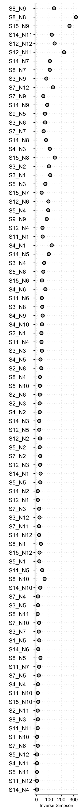
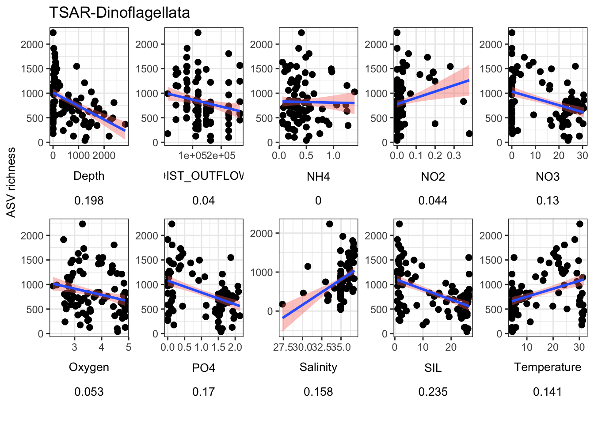
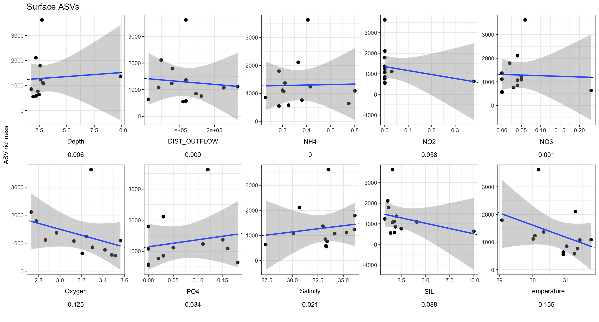
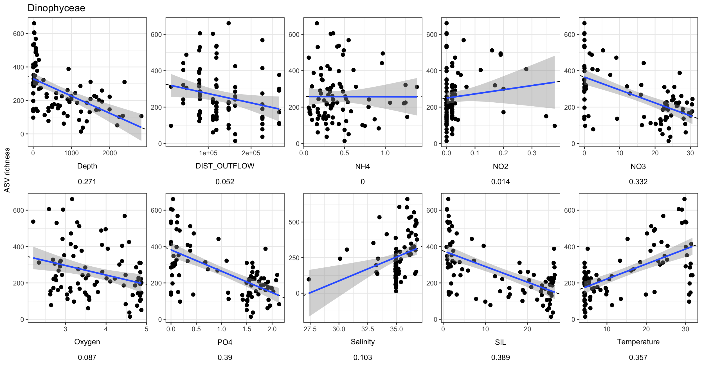
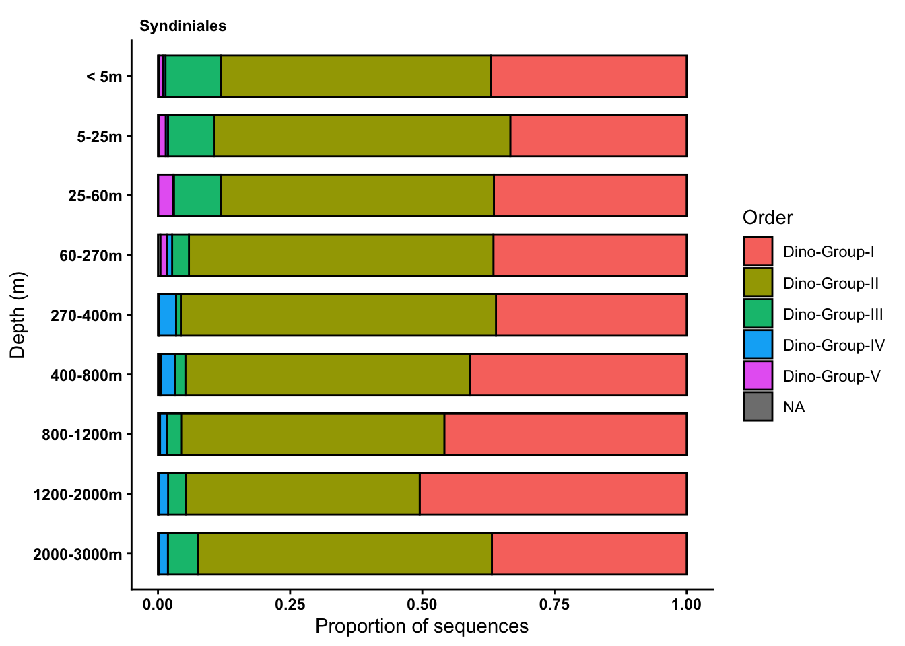
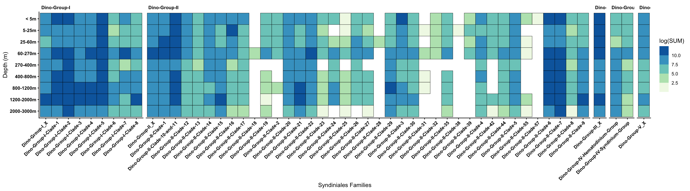

library(tidyverse);library(phyloseq); library(decontam)
library(compositions); library(patchwork);
library(ggupset); library(gt)
library(plotly); library(viridis); library(vegan)2023 Gulf data analysis
1 Contents & introduction
1.1 Set up R environment
Set up R & import starting data
Import ASV tables as R objects.
load(file = "input-data/asv_wtax_qc_GoM23_102025.RData", verbose = TRUE)Loading objects:
samples_too_low
asv_wide_cleaned
asv_long_cleanedImport & compile metadata
master_metadata <- read.csv("input-data/grad23_master.csv", header = TRUE,
check.names = FALSE, na.strings = "--")
# head(master_metadata)
cellcounts <- read.csv("cellcounts-sept22.csv")1.2 Modify metadata file
colnames(master_metadata) [1] "Station" "Niskin"
[3] "Targeted Depth (m)" "CTD Recorded Depth (m)"
[5] "CTD Pressure (db)" "NMEA Latitude"
[7] "NMEA Longitude" "Date"
[9] "Time (UTC)" "CFC Bottle"
[11] "O2 Flask" "Methane/N_O"
[13] "DIC/TA flask" "CDOM"
[15] "Viscosity / PAM/Turn." "Nutrients"
[17] "DON" "___O"
[19] "Salinity" "Microbio Filters"
[21] "Microscopy" "HOC / DOC"
[23] "CTD Temperature" "Uncorrected CTD Conductivity"
[25] "Corrected CTD Conductivity" "Bottle Conductivity"
[27] "Bottle Conductivity (Dupes)" "Uncorrected CTD Salinity"
[29] "Corrected CTD Salinity" "Bottle Salinity"
[31] "Bottle Salinity (Dupes)" "Uncorrected CTD Oxygen"
[33] "Corrected CTD Oxygen" "Bottle Oxygen (ml/l)"
[35] "Bottle Oxygen (Dupes)" "CTD Fluorescence"
[37] "NO3" "PO4"
[39] "SIL" "NO2"
[41] "NH4" "Notes" # str(master_metadata)
# str(cellcounts)
env_metadata_toplot <- master_metadata %>%
mutate(depth_feature = case_when(
grepl("O2 min", Notes) ~ "O2 min",
grepl("DCM", Notes) ~ "DCM"
)) %>%
mutate(Station = as.integer(Station)) %>%
select(Station, Niskin, Depth = `CTD Recorded Depth (m)`, depth_feature, Latitude = `NMEA Latitude`, Longitude = `NMEA Longitude`,
Date, Time_UTC = `Time (UTC)`, Temperature = `CTD Temperature`, Salinity = `Corrected CTD Salinity`,
Oxygen = `Corrected CTD Oxygen`, NO3, PO4, SIL, NO2, NH4) %>%
left_join(cellcounts %>% select(Station, Niskin, Prok_count = `prok.count`)) %>%
separate_longer_delim(c(NO3, PO4, SIL, NO2, NH4), delim = " / ") %>%
pivot_longer(cols = c(Temperature, Salinity, Oxygen, NO3, PO4, SIL, NO2, NH4, Prok_count), names_to = "ENV_VARIABLE", values_to = "VALUE", values_drop_na = TRUE, values_transform = as.numeric) %>%
group_by(Station, Niskin, Depth, depth_feature, Latitude, Longitude, Date, Time_UTC, ENV_VARIABLE) %>%
summarise(value = mean(VALUE))Warning: There was 1 warning in `mutate()`.
ℹ In argument: `Station = as.integer(Station)`.
Caused by warning:
! NAs introduced by coercionJoining with `by = join_by(Station, Niskin)`
`summarise()` has grouped output by 'Station', 'Niskin', 'Depth',
'depth_feature', 'Latitude', 'Longitude', 'Date', 'Time_UTC'. You can override
using the `.groups` argument.1.2.1 Create metabarcoding table with metadata
# head(asv_long_cleaned)
# head(env_metadata_toplot)
# Widen environmental metadata to add to ASV df.
tmp_forasv <- env_metadata_toplot %>%
filter(!is.na(ENV_VARIABLE)) |>
pivot_wider(names_from = ENV_VARIABLE, values_from = value)
asv_long_cleaned_wenv <- asv_long_cleaned %>%
separate(SAMPLES, into = c("gom", "STATION", "NISKIN", "extra"), sep = "_") %>%
mutate(Station = as.integer(str_remove(STATION, "S")),
Niskin = as.integer(str_remove(NISKIN, "N"))) %>%
unite(STN_NISKIN, STATION, NISKIN, sep = "_") %>%
select(-gom, -extra) %>%
left_join(tmp_forasv) Warning: Expected 4 pieces. Additional pieces discarded in 209269 rows [1, 2, 3, 4, 5,
6, 7, 8, 9, 10, 11, 12, 13, 14, 15, 16, 17, 18, 19, 20, ...].Joining with `by = join_by(Station, Niskin)`head(asv_long_cleaned_wenv)# A tibble: 6 × 30
FeatureID Taxon Domain Supergroup Division Subdivision Class Order Family
<chr> <chr> <chr> <chr> <chr> <chr> <chr> <chr> <chr>
1 5bf3b429509ca… Euka… Eukar… Obazoa Opistho… Metazoa Arth… Crus… Maxil…
2 5bf3b429509ca… Euka… Eukar… Obazoa Opistho… Metazoa Arth… Crus… Maxil…
3 5bf3b429509ca… Euka… Eukar… Obazoa Opistho… Metazoa Arth… Crus… Maxil…
4 5bf3b429509ca… Euka… Eukar… Obazoa Opistho… Metazoa Arth… Crus… Maxil…
5 5bf3b429509ca… Euka… Eukar… Obazoa Opistho… Metazoa Arth… Crus… Maxil…
6 5bf3b429509ca… Euka… Eukar… Obazoa Opistho… Metazoa Arth… Crus… Maxil…
# ℹ 21 more variables: Genus <chr>, Species <chr>, STN_NISKIN <chr>,
# SEQUENCE_COUNT <dbl>, Station <int>, Niskin <int>, Depth <dbl>,
# depth_feature <chr>, Latitude <dbl>, Longitude <dbl>, Date <chr>,
# Time_UTC <chr>, NH4 <dbl>, NO2 <dbl>, NO3 <dbl>, Oxygen <dbl>, PO4 <dbl>,
# SIL <dbl>, Salinity <dbl>, Temperature <dbl>, Prok_count <dbl>1.3 Calculate distance from shore
Distance from shore
library(geosphere)
# Long, Lat order
outflow_lat <- 28.95
outflow_long <- 89.39
outflow <- c(outflow_long, outflow_lat)
outflow[1] 89.39 28.95Set up ordering of stations and locations.
stn_info <- read.csv("input-data/manual_stn_classification.csv")
offshore_on_shore_order <- c("S1", "S2", "S3", "S4", "S5","S9", "S8", "S7", "S11", "S12", "S14", "S15")
transect_labels <- c("transect1", "transect1", "transect1", "transect1", "transect1", "transect2", "transect2", "transect2", "transect3", "transect3", "transect3", "transect3")
depth_order <- as.character(sort((unique(env_metadata_toplot$Depth))))
depth_order_round <- as.character(sort(round(unique(env_metadata_toplot$Depth), digits = 0)))
depth_bin <- c("< 5m","5-25m","25-60m",
"60-270m","270-400m","400-800m",
"800-1200m","1200-2000m","2000-3000m")
depth_bin_CHARC <- c("..5m","5.25m","25.60m",
"60.270m","270.400m","400.800m",
"800.1200m","1200.2000m","2000.3000m")
asv_long_cleaned_wenv_mod <- asv_long_cleaned_wenv %>%
left_join(stn_info) %>%
mutate(stn = paste("S", Station, sep = "")) %>%
mutate(STN_ORDER = factor(stn, levels = offshore_on_shore_order),
TRANSECT = factor(stn, levels = offshore_on_shore_order, labels = transect_labels),
DEPTH_ORDER = factor(Depth, levels = rev(depth_order), labels = rev(depth_order_round))) %>%
mutate(DIST_OUTFLOW = distHaversine(cbind(Longitude, Latitude), cbind(outflow_long, outflow_lat))) %>%
mutate(DEPTH_BIN = case_when(
Depth <= 5 ~ "< 5m",
Depth > 5 & Depth <=25 ~ "5-25m",
Depth > 25 & Depth <=60 ~ "25-60m",
Depth > 60 & Depth <=270 ~ "60-270m",
Depth > 270 & Depth <=400 ~ "270-400m",
Depth > 400 & Depth <=800 ~ "400-800m",
Depth > 800 & Depth <=1200 ~ "800-1200m",
Depth > 1200 & Depth <=2000 ~ "1200-2000m",
Depth > 2000 & Depth <=3000 ~ "2000-3000m",
))Joining with `by = join_by(Station)`# dim(asv_long_cleaned_wenv)
# dim(asv_long_cleaned_wenv_mod)1.4 Study stats
range(asv_long_cleaned_wenv_mod$Station)[1] 1 15length(unique(asv_long_cleaned_wenv_mod$Station)) # 12 stations[1] 12(unique(asv_long_cleaned_wenv_mod$Station)) # 12 stations [1] 15 1 11 12 14 2 3 4 5 7 8 9length(unique(asv_long_cleaned_wenv_mod$STN_NISKIN)) # 91 unique samples[1] 91table1 <- asv_long_cleaned_wenv_mod %>%
select(STN_NISKIN, Station, Depth, depth_feature, Date, Time_UTC, Latitude, Longitude, Transect, DEPTH_BIN, DIST_OUTFLOW, NH4, NO2, NO3, Oxygen, PO4, SIL, Salinity, Temperature, Prok_count) %>%
distinct()
# head(table1)
write.csv(table1, file = "output-tables/table-samplelist.csv")2 Curate taxonomic assignment
# head(asv_long_cleaned_wenv_mod)
# unique(asv_long_cleaned_wenv_mod$Domain) # take EUKS
# unique(asv_long_cleaned_wenv_mod$Supergroup)
# unique(asv_long_cleaned_wenv_mod$Division)
# View(asv_long_cleaned_wenv_mod %>%
# select(Domain, Supergroup, Division, Subdivision, Class, Order, Family, Genus, Species) %>% distinct())asv_long_wenv_wtax <- asv_long_cleaned_wenv_mod %>%
filter(Domain == "Eukaryota") %>%
filter(Supergroup != "nucl") %>%
mutate(DIVISION = case_when(
Subdivision == "X" ~ "Unannotated",
is.na(Subdivision) ~ "Unannotated",
TRUE ~ Subdivision
)) %>%
# Goal is to combine Subdivision-Class
mutate(SUPERGROUP_CLASS = case_when(
## High level NAs at the supergroup and division level
(is.na(Division) & !is.na(Supergroup)) ~ paste(Supergroup, "Unannotated", sep = "-"),
(is.na(Division) & is.na(Supergroup)) ~ "Eukaryote-Unannotated",
(is.na(Subdivision)) ~ paste(Supergroup, "Unannotated", sep = "-"),
(is.na(Class) & !is.na(Subdivision)) ~ paste(Subdivision, "Unannotated", sep = "-"),
#
(Subdivision == "X") ~ paste(Division, "Unannotated", sep = "-"),
(Class == "X") ~ paste(Subdivision, "Unannotated", sep = "-"),
TRUE ~ paste(Subdivision, Class, sep = "-"))) %>%
mutate(Supergroup_simplified = case_when(
Supergroup == "TSAR" ~ paste("TSAR", Subdivision, sep = "-"),
Supergroup == "Obazoa" ~ paste("Obazoa", DIVISION, sep = "-"),
TRUE ~ Supergroup
))
#
# sort(unique(tmp$DIVISION))
# sort(unique(tmp$Subdivision))
# unique(tmp$SUPERGROUP_CLASS)
# head(asv_long_clean_wtax)
tax_key <- asv_long_wenv_wtax %>%
select(FeatureID, Taxon, Supergroup, Division, Subdivision, Class, Order, Family, Genus, Species) %>% distinct()2.1 Average across replicates
head(asv_long_wenv_wtax)# A tibble: 6 × 43
FeatureID Taxon Domain Supergroup Division Subdivision Class Order Family
<chr> <chr> <chr> <chr> <chr> <chr> <chr> <chr> <chr>
1 5bf3b429509ca… Euka… Eukar… Obazoa Opistho… Metazoa Arth… Crus… Maxil…
2 5bf3b429509ca… Euka… Eukar… Obazoa Opistho… Metazoa Arth… Crus… Maxil…
3 5bf3b429509ca… Euka… Eukar… Obazoa Opistho… Metazoa Arth… Crus… Maxil…
4 5bf3b429509ca… Euka… Eukar… Obazoa Opistho… Metazoa Arth… Crus… Maxil…
5 5bf3b429509ca… Euka… Eukar… Obazoa Opistho… Metazoa Arth… Crus… Maxil…
6 5bf3b429509ca… Euka… Eukar… Obazoa Opistho… Metazoa Arth… Crus… Maxil…
# ℹ 34 more variables: Genus <chr>, Species <chr>, STN_NISKIN <chr>,
# SEQUENCE_COUNT <dbl>, Station <int>, Niskin <int>, Depth <dbl>,
# depth_feature <chr>, Latitude <dbl>, Longitude <dbl>, Date <chr>,
# Time_UTC <chr>, NH4 <dbl>, NO2 <dbl>, NO3 <dbl>, Oxygen <dbl>, PO4 <dbl>,
# SIL <dbl>, Salinity <dbl>, Temperature <dbl>, Prok_count <dbl>,
# Transect <int>, STN_CATEGORY_3 <chr>, STN_CATEGORY_4 <chr>,
# PROX_TOSHORE <int>, stn <chr>, STN_ORDER <fct>, TRANSECT <fct>, …asv_long_avg_wtax <- asv_long_wenv_wtax %>%
# First average ASV sequence count across replicates
group_by(FeatureID, Taxon, DIVISION, SUPERGROUP_CLASS, Supergroup_simplified, Supergroup, Division, Subdivision, Class, Order, Family, Genus, Species,
STN_NISKIN, Station, Niskin, Depth, depth_feature, Latitude, Longitude, Temperature, Salinity, Oxygen, NH4, NO2, NO3, PO4, SIL, Prok_count,
STN_CATEGORY_3, STN_CATEGORY_4, STN_ORDER, TRANSECT, DEPTH_ORDER, DIST_OUTFLOW, DEPTH_BIN) %>%
summarise(MEAN_REPS_seq = mean(SEQUENCE_COUNT)) %>%
filter(STN_NISKIN != "S12_N10") |>
ungroup()`summarise()` has grouped output by 'FeatureID', 'Taxon', 'DIVISION',
'SUPERGROUP_CLASS', 'Supergroup_simplified', 'Supergroup', 'Division',
'Subdivision', 'Class', 'Order', 'Family', 'Genus', 'Species', 'STN_NISKIN',
'Station', 'Niskin', 'Depth', 'depth_feature', 'Latitude', 'Longitude',
'Temperature', 'Salinity', 'Oxygen', 'NH4', 'NO2', 'NO3', 'PO4', 'SIL',
'Prok_count', 'STN_CATEGORY_3', 'STN_CATEGORY_4', 'STN_ORDER', 'TRANSECT',
'DEPTH_ORDER', 'DIST_OUTFLOW'. You can override using the `.groups` argument.# head(asv_long_avg_wtax)
# unique(asv_long_avg_wtax$STN_CATEGORY_4)3 Data frames for analysis
Central data frames:
asv_long_wenv_wtaxtax_keyenv_metadata_toplotasv_long_avg_wtax
# save(asv_long_wenv_wtax, tax_key, table1, env_metadata_toplot, asv_long_avg_wtax, file = "input-data/gulf-2023-sequence-analysis_10252025.RData")4 Sample comparison & taxonomic classification
4.1 PCA analysis
Create wide format matrix with sequence counts averaged across replicates (by ASV)
head(asv_long_avg_wtax)# A tibble: 6 × 37
FeatureID Taxon DIVISION SUPERGROUP_CLASS Supergroup_simplified Supergroup
<chr> <chr> <chr> <chr> <chr> <chr>
1 0001b2ea4223… Euka… Dinofla… Dinoflagellata-… TSAR-Dinoflagellata TSAR
2 0004be388d73… Euka… Dinofla… Dinoflagellata-… TSAR-Dinoflagellata TSAR
3 000761c7389a… Euka… Dinofla… Dinoflagellata-… TSAR-Dinoflagellata TSAR
4 000964551660… Euka… Radiola… Radiolaria-Acan… TSAR-Radiolaria TSAR
5 000964551660… Euka… Radiola… Radiolaria-Acan… TSAR-Radiolaria TSAR
6 000964551660… Euka… Radiola… Radiolaria-Acan… TSAR-Radiolaria TSAR
# ℹ 31 more variables: Division <chr>, Subdivision <chr>, Class <chr>,
# Order <chr>, Family <chr>, Genus <chr>, Species <chr>, STN_NISKIN <chr>,
# Station <int>, Niskin <int>, Depth <dbl>, depth_feature <chr>,
# Latitude <dbl>, Longitude <dbl>, Temperature <dbl>, Salinity <dbl>,
# Oxygen <dbl>, NH4 <dbl>, NO2 <dbl>, NO3 <dbl>, PO4 <dbl>, SIL <dbl>,
# Prok_count <dbl>, STN_CATEGORY_3 <chr>, STN_CATEGORY_4 <chr>,
# STN_ORDER <fct>, TRANSECT <fct>, DEPTH_ORDER <fct>, DIST_OUTFLOW <dbl>, …Station & depth info
stn_depth_info <- asv_long_avg_wtax |>
select(STN_NISKIN, Station, Niskin, Depth, depth_feature, Latitude, Longitude, Temperature, Salinity, Oxygen, NH4, NO2, NO3, PO4, SIL, Prok_count,
STN_CATEGORY_3, STN_CATEGORY_4, STN_ORDER, TRANSECT, DEPTH_ORDER, DIST_OUTFLOW, DEPTH_BIN) |>
filter(STN_NISKIN != "S12_N10") |>
distinct()Make wide format and as a matrix
asv_wide_avg_matrix <- asv_long_avg_wtax %>%
select(FeatureID, STN_NISKIN, MEAN_REPS_seq) %>%
filter(STN_NISKIN != "S12_N10") |>
pivot_wider(names_from = STN_NISKIN, values_from = MEAN_REPS_seq, values_fn = mean, values_fill = 0) %>%
column_to_rownames(var = "FeatureID") %>%
as.matrix()pca_clr <- prcomp(data.frame(compositions::clr(t(asv_wide_avg_matrix))))
# ?prcompvariance_clr <- (pca_clr$sdev^2)/sum(pca_clr$sdev^2)
barplot(variance_clr, main = "Log-Ratio PCA Screeplot", xlab = "PC Axis", ylab = "% Variance",
cex.names = 1.5, cex.axis = 1.5, cex.lab = 1.5, cex.main = 1.5)
Plot PCA
blues <- c("#dde4f0","#b7cae8","#96b3e3",
"#6b94d6","#3473d9", "#0b4fbd",
"#0b429c", "#07214a", "#081730")
names(blues) <- depth_bin
PCA_PLOT <- data.frame(pca_clr$x, STN_NISKIN = rownames(pca_clr$x)) %>%
select(PC1, PC2, PC3, STN_NISKIN) %>%
left_join(stn_depth_info) |>
mutate(depth = as.numeric(DEPTH_ORDER)) |>
mutate(depth_feature = str_replace_na(depth_feature, replacement = "other")) |>
## Generate PCA plot
ggplot(aes(x = PC1, y = PC2,
shape = depth_feature,
fill = DEPTH_BIN)) +
geom_hline(yintercept = 0) + geom_vline(xintercept = 0, color = "#525252") +
geom_point(stroke = 0.6, alpha = 0.8, size = 4) +
ylab(paste0('PC2 ',round(variance_clr[2]*100,2),'%')) +
xlab(paste0('PC1 ',round(variance_clr[1]*100,2),'%')) +
scale_shape_manual(values = c(24, 23, 21)) +
scale_fill_manual(values = blues) +
# scale_size_continuous(range = c(2, 6)) +
theme_bw() +
theme(axis.text = element_text(color="black", size=12),
legend.title = element_blank(),
panel.grid.major = element_line(color = "grey90", linetype = "dotted"),
axis.title = element_text(color="black", size= 12),
legend.text = element_text(color = "black", size = 8, face = "bold"),
plot.margin = margin(2, 1, 2, 1, "cm")) +
guides(fill = guide_legend(override.aes = list(
color = "black",
shape = 22,
size = 5)),
shape = guide_legend(override.aes = list(
color = "black",
size = 5)))Joining with `by = join_by(STN_NISKIN)`PCA_PLOT
# ggsave("figures/pca-plot.svg", width = 5.5, height = 5, device = "svg", limitsize = FALSE)4.2 Combined dendrogram
library(ggdendro)
rel_abun <- decostand(asv_wide_avg_matrix, MARGIN = 2, method = "total")
# Cluster dendrogram (average hierarchical clustering)
cluster_gom <- hclust(dist(t(rel_abun)), method = "average")
dendro <- as.dendrogram(cluster_gom)
gom_dendro <- dendro_data(dendro, type = "rectangle")gom_dendro_plot <- ggplot(segment(gom_dendro)) +
geom_segment(aes(x = x, y = y, xend = xend,
yend = yend)) +
coord_flip() +
scale_y_reverse(expand = c(0.2, 0.5), breaks = c(0, 0.2, 0.4, 0.6, 0.8)) +
geom_text(size = 3, aes(x = x, y = y, label = label, angle = 0, hjust = 0), data = label(gom_dendro)) +
theme_dendro() + labs(y = "Dissimilarity") +
theme(axis.text.x = element_text(color = "black", size = 10),
axis.line.x = element_line(color = "#252525"),
axis.ticks.x = element_line(), axis.title.x = element_text(color = "black",
size = 10))
# svg('figs/SUPPLEMENTARY-dendrogram-wreps.svg', w = 10, h = 8)
gom_dendro_plot
Isolate label names that correspond to dendrogram.
tmp <- data.frame(gom_dendro$labels)
class(tmp)[1] "data.frame"labels_for_dendro <- as.character(tmp$label)
# labels_for_dendro4.2.1 Dendrogram annotation
blues <- c("#dde4f0","#b7cae8","#96b3e3",
"#6b94d6","#3473d9", "#0b4fbd",
"#0b429c", "#07214a", "#081730")
names(blues) <- depth_bin
DEPTH <- stn_depth_info %>%
mutate(label_order = factor(STN_NISKIN, levels = labels_for_dendro)) %>%
ggplot(aes(y = label_order, x = 1, fill = DEPTH_BIN)) +
geom_point(shape = 22, color = "black", size = 4) +
scale_fill_manual(values = blues) +
scale_y_discrete(position = "right") +
theme_void() + theme(
legend.position = "right",
legend.title = element_blank(),
legend.text = element_text(color = "black"),
strip.background = element_blank(),
axis.ticks = element_blank(),
axis.title = element_text(color = "black"),
axis.text.y = element_text(color = "black"),
axis.text.x = element_blank()) +
guides(fill = guide_legend(reverse = TRUE, ncol = 1)) +
labs(x = "", y = "")
DEPTH
DIST <- stn_depth_info %>%
mutate(label_order = factor(STN_NISKIN, levels = labels_for_dendro)) %>%
mutate(dist_outflow = DIST_OUTFLOW/1000) %>%
ggplot(aes(y = label_order, x = 1, fill = dist_outflow)) +
geom_point(shape = 22, color = "black", size = 4) +
# scale_fill_continuous(option = "magma") +
scale_fill_viridis_c(option = "magma", direction = -1) +
# scale_fill_stepsn(colors = blues, breaks = c(50, 100, 300, 500, 1000, 1500, 2000)) +
theme_void() + theme(
legend.position = "right",
legend.title = element_blank(),
legend.text = element_text(color = "black"),
strip.background = element_blank(),
axis.ticks = element_blank(),
axis.title = element_text(color = "black"),
axis.text.y = element_text(color = "black"),
axis.text.x = element_blank()) +
guides(fill = guide_legend(reverse = TRUE, ncol = 1)) +
labs(x = "x10^3 km", y = "")
DIST
dendrogram annotation with DCM, O2, and Salt max
feature_profiles <- read.csv("input-data/feature_profiles_depth.csv")PROFILES <- stn_depth_info %>%
ungroup() %>%
mutate(label_order = factor(STN_NISKIN, levels = labels_for_dendro)) %>%
left_join(feature_profiles) %>%
select(STN_NISKIN, label_order, Station, Niskin, Depth, FEATURE) %>% distinct() %>%
mutate(VAL = case_when(
!is.na(FEATURE) ~ 1,
TRUE ~ 0
)) %>%
ggplot(aes(y = label_order, x = FEATURE, fill = 1)) +
geom_tile(color = "black") +
coord_fixed(ratio = 1) +
theme_void() + theme(
legend.position = "none",
legend.title = element_blank(),
legend.text = element_text(color = "black"),
strip.background = element_blank(),
panel.grid.major = element_line(color = "grey90", linetype = "dotted"),
axis.ticks = element_blank(),
axis.title = element_text(color = "black"),
axis.text.y = element_text(color = "black"),
axis.text.x = element_text(color = "black", angle = 90, hjust = 1, vjust = 0, size = 5)) +
# guides(fill = guide_legend(reverse = TRUE, ncol = 1)) +
labs(x = "", y = "")Joining with `by = join_by(Station, Niskin, Depth)`PROFILES
TRANSECT <- stn_depth_info %>%
mutate(label_order = factor(STN_NISKIN, levels = labels_for_dendro)) %>%
ggplot(aes(y = label_order, x = 1, fill = TRANSECT)) +
geom_point(shape = 22, color = "black", size = 4) +
scale_fill_manual(values = c("#ff8787", "#eaf576", "#76aff5")) +
theme_void() + theme(
legend.position = "right",
legend.title = element_blank(),
legend.text = element_text(color = "black"),
strip.background = element_blank(),
axis.ticks = element_blank(),
axis.title = element_text(color = "black"),
axis.text.y = element_text(color = "black"),
axis.text.x = element_blank()) +
guides(fill = guide_legend(reverse = TRUE, ncol = 1)) +
labs(x = "", y = "")
TRANSECT
PROK <- stn_depth_info %>%
mutate(label_order = factor(STN_NISKIN, levels = labels_for_dendro)) %>%
ggplot(aes(y = label_order, x = 1, fill = Prok_count)) +
geom_point(shape = 22, color = "black", size = 4) +
# scale_fill_manual(values = c("#ff8787", "#eaf576", "#76aff5")) +
scale_fill_fermenter(na.value = "grey30", palette = 3, direction = 1) +
theme_void() + theme(
legend.position = "right",
legend.title = element_blank(),
legend.text = element_text(color = "black"),
strip.background = element_blank(),
axis.ticks = element_blank(),
axis.title = element_text(color = "black"),
axis.text.y = element_text(color = "black"),
axis.text.x = element_blank()) +
guides(fill = guide_legend(reverse = TRUE, ncol = 1)) +
labs(x = "", y = "")
PROK
5 Taxonomy
Richness by depth, station, and feature.
asv_long_avg_wtax %>%
group_by(Station, depth_feature, DEPTH_BIN) %>%
summarise(SEQ_SUM = sum(MEAN_REPS_seq),
ASV_COUNT = n()) %>%
mutate(depth_feature = str_replace_na(depth_feature, replacement = "other")) |>
mutate(depth_bin_order = factor(DEPTH_BIN, levels = rev(depth_bin))) |>
ggplot(aes(x = as.factor(Station), y = depth_bin_order,
size = ASV_COUNT, fill = depth_feature)) +
geom_jitter(shape = 21, color = "black", stroke = 1.5) +
scale_x_discrete(position = "top") +
scale_fill_manual(values = c("#6edb8f", "#ab70e6", "#ebb923")) +
scale_size(range=c(3,7), guide="legend") +
theme_classic() +
theme(
axis.text.x = element_text(color = "black", size = 14),
axis.text.y = element_text(color = "black", size = 14),
panel.grid.major = element_line(color = "grey90", linetype = "dotted")
) +
labs(x = "", y = "Depth (m)")`summarise()` has grouped output by 'Station', 'depth_feature'. You can
override using the `.groups` argument.
tax_color <- c("#db1f7d", "#2c5c1d", "#806f8c",
"#f5bfb0", "#93c47d","#7c52bf", "#007a7a",
"#34495e", "#9b59b6", "#fea02f","#ee429b",
"#ffe8a4","#ff6f61","#fcf517","#8a0622",
"#ff7530", "#2986cc", "#e71414","#de6600",
"#1abc9c", "#a0b59f", "#d7b6d7", "#23b521", "#5b545c", "black", "white", "grey10", "grey60")
tax_simplified_list <- as.character((unique(asv_long_avg_wtax$Supergroup_simplified)))
names(tax_color) <- tax_simplified_listLow taxonomic resolution should be at DIVISION level. Then to SUPERGROUP_CLASS level.
5.0.1 For dendrogram
# Sum by taxonomic groups
TAX <- asv_long_avg_wtax %>%
filter(STN_NISKIN != "S12_N10") %>%
filter(Supergroup_simplified != "Eukaryota") %>%
filter(Supergroup_simplified != "TSAR-NA") %>%
filter(Supergroup_simplified != "Obazoa-Metazoa") %>%
group_by(STN_NISKIN, Station, Niskin, Depth, DEPTH_BIN,
DEPTH_ORDER, Supergroup_simplified) |>
summarise(SUM_SEQ = sum(MEAN_REPS_seq),
ASV_COUNT = n()) %>%
# Factoring and ordering
mutate(label_order = factor(STN_NISKIN, levels = labels_for_dendro)) %>%
# mutate(label_order = str_remove(label_order, "_")) |>
ggplot(aes(y = (label_order), x = SUM_SEQ, fill = Supergroup_simplified)) +
geom_bar(stat = "identity", position = "fill",
color = "grey20", width = 0.8, linewidth = 0.5) +
scale_fill_manual(values = tax_color) +
scale_y_discrete(position = "right") +
theme_void() + theme(
legend.position = "right",
legend.title = element_blank(),
legend.text = element_text(color = "black"),
strip.background = element_blank(),
axis.line.x = element_line(),
axis.title = element_text(color = "black"),
axis.text.y = element_text(color = "black", vjust = 0.5, hjust = 0, size = 10),
axis.text.x = element_text(color = "black", size = 8)) +
guides(fill = guide_legend(reverse = TRUE, ncol = 1)) +
labs(x = "", y = "")`summarise()` has grouped output by 'STN_NISKIN', 'Station', 'Niskin', 'Depth',
'DEPTH_BIN', 'DEPTH_ORDER'. You can override using the `.groups` argument.TAX
5.0.2 Plot sequence relative abundance
asv_long_avg_wtax %>%
group_by(Station, DEPTH_BIN, Supergroup, Supergroup_simplified) %>%
summarise(SUM_SEQ = sum(MEAN_REPS_seq),
ASV_COUNT = n()) %>%
filter(Supergroup_simplified != "Eukaryota") %>%
filter(Supergroup_simplified != "TSAR-NA") %>%
filter(Supergroup_simplified != "Obazoa-Metazoa") %>%
mutate(depth_bin_order = factor(DEPTH_BIN, levels = rev(depth_bin))) |>
ggplot(aes(y = depth_bin_order, x = SUM_SEQ, fill = Supergroup_simplified)) +
geom_bar(stat = "identity", position = "fill", color = "white", width = 0.9) +
scale_fill_manual(values = tax_color) +
scale_x_continuous(expand = c(0,0)) +
facet_grid(rows = vars(Station), scales = "free_y", space = "free", axis.labels = "all_x") +
theme_classic() + theme(
legend.position = "right",
legend.title = element_blank(),
legend.text = element_text(color = "black", face = "bold"),
strip.background = element_blank(),
strip.text.y = element_text(angle = 0, color = "black", face = "bold"),
axis.title = element_text(color = "black", face = "bold"),
axis.text.y = element_text(color = "black", face = "bold"),
axis.text.x = element_text(color = "black", face = "bold")) +
guides(fill = guide_legend(reverse = TRUE, ncol = 1)) +
labs(x = "Sequence Relative Abundace", y = "Depth (m)")`summarise()` has grouped output by 'Station', 'DEPTH_BIN', 'Supergroup'. You
can override using the `.groups` argument.
6 Diversity indices
Use wide dataframe from above.
head(asv_wide_avg_matrix)[,1:3] S8_N11 S14_N9 S5_N6
0001b2ea4223c275477e5ea893ce1b04 3 0 0
0004be388d73e3dd74eaef4f9e559d7d 0 3 0
000761c7389a026c89d82c073f4ab717 0 0 16
0009645516609bda2246e1955ff9ec1d 0 0 0
000a4e40ee3001cd1ca18220dbc07caa 0 0 0
000a64b2ed59960c77086b6b29a4c845 0 0 0shannon_all <- vegan::diversity(asv_wide_avg_matrix, index = "shannon", MARGIN = 2)SHANNON <- data.frame(shannon_all) %>%
rownames_to_column(var = "STN_NISKIN") %>%
left_join(stn_depth_info) |>
mutate(label_order = factor(STN_NISKIN, levels = labels_for_dendro)) %>%
ggplot(aes(x = shannon_all, y = label_order)) +
geom_point(shape = 21, fill = "grey30", color = "black", size = 2, stroke = 1) +
theme_classic() + theme(
legend.position = "right",
legend.title = element_blank(),
legend.text = element_text(color = "black"),
strip.background = element_blank(),
# axis.ticks = element_blank(),
axis.title = element_text(color = "black", size = 8),
axis.text.y = element_text(color = "black", vjust = 0.5, hjust = 0, size = 10),
panel.grid.major = element_line(color = "grey90", linetype = "dotted")) +
guides(fill = guide_legend(reverse = TRUE, ncol = 1)) +
labs(x = "Shannon Diversity", y = "")Joining with `by = join_by(STN_NISKIN)`invsimp_all <- vegan::diversity(asv_wide_avg_matrix, index = "invsimpson", MARGIN = 2)
# head(data.frame(invsimp_all))INVSIMP <- data.frame(invsimp_all) %>%
rownames_to_column(var = "STN_NISKIN") %>%
left_join(stn_depth_info) |>
mutate(label_order = factor(STN_NISKIN, levels = labels_for_dendro)) %>%
ggplot(aes(x = invsimp_all, y = label_order)) +
geom_point(shape = 21, fill = "grey80", color = "black", size = 2, stroke = 1) +
theme_classic() + theme(
legend.position = "right",
legend.title = element_blank(),
legend.text = element_text(color = "black"),
strip.background = element_blank(),
# axis.ticks = element_blank(),
axis.title = element_text(color = "black", size = 8),
axis.text.y = element_text(color = "black", vjust = 0.5, hjust = 0, size = 10),
panel.grid.major = element_line(color = "grey90", linetype = "dotted")) +
guides(fill = guide_legend(reverse = TRUE, ncol = 1)) +
labs(x = "Inverse Simpson", y = "")Joining with `by = join_by(STN_NISKIN)`INVSIMP
6.1 Plot Dendrogram compilation
gom_dendro_plot + DEPTH + PROFILES + DIST + TRANSECT + PROK + SHANNON + INVSIMP + TAX +
plot_layout(nrow = 1,
widths = c(1.3, 0.5, 0.5, 0.5, 0.5, 0.5,
0.4, 0.4, 0.7))
# ggsave("figures/dendrogram-compiled.svg", width = 22, height = 13, device = "svg", limitsize = FALSE)7 Taxa and depth
# head(asv_long_avg_wtax)
asv_long_avg_wtax %>%
filter(Supergroup_simplified == "TSAR-Ciliophora") %>%
group_by(Class, Depth) %>%
summarise(ASV_COUNT = n()) %>%
ggplot(aes(x = ASV_COUNT, y = Depth, fill = Class)) +
geom_point(stat = "identity", shape = 21, color = "black") +
scale_y_reverse() +
theme_classic()`summarise()` has grouped output by 'Class'. You can override using the
`.groups` argument.
8 CLR targets & plots
TSAR-Dinoflagellata TSAR-Radiolaria TSAR-Gyrista
Confirming what core protistan groups are the most prominent members of the community across all of the samples.
# head(asv_long_avg_wtax)
top_taxa <- asv_long_avg_wtax %>%
filter(!(grepl("Obazoa", Supergroup_simplified))) %>%
group_by(Supergroup_simplified, STN_NISKIN) %>%
summarise(SUM_SEQ = sum(MEAN_REPS_seq),
ASV_COUNT = n()) %>%
ungroup() %>%
# Subset the top 2 groups with the highest ASV count
group_by(STN_NISKIN) %>%
slice_max(order_by = ASV_COUNT, n = 3)`summarise()` has grouped output by 'Supergroup_simplified'. You can override
using the `.groups` argument. # slice_max(order_by = SUM_SEQ, n = 3)
# top_taxa
list_top <- unique(top_taxa$Supergroup_simplified)head(asv_long_avg_wtax)# A tibble: 6 × 37
FeatureID Taxon DIVISION SUPERGROUP_CLASS Supergroup_simplified Supergroup
<chr> <chr> <chr> <chr> <chr> <chr>
1 0001b2ea4223… Euka… Dinofla… Dinoflagellata-… TSAR-Dinoflagellata TSAR
2 0004be388d73… Euka… Dinofla… Dinoflagellata-… TSAR-Dinoflagellata TSAR
3 000761c7389a… Euka… Dinofla… Dinoflagellata-… TSAR-Dinoflagellata TSAR
4 000964551660… Euka… Radiola… Radiolaria-Acan… TSAR-Radiolaria TSAR
5 000964551660… Euka… Radiola… Radiolaria-Acan… TSAR-Radiolaria TSAR
6 000964551660… Euka… Radiola… Radiolaria-Acan… TSAR-Radiolaria TSAR
# ℹ 31 more variables: Division <chr>, Subdivision <chr>, Class <chr>,
# Order <chr>, Family <chr>, Genus <chr>, Species <chr>, STN_NISKIN <chr>,
# Station <int>, Niskin <int>, Depth <dbl>, depth_feature <chr>,
# Latitude <dbl>, Longitude <dbl>, Temperature <dbl>, Salinity <dbl>,
# Oxygen <dbl>, NH4 <dbl>, NO2 <dbl>, NO3 <dbl>, PO4 <dbl>, SIL <dbl>,
# Prok_count <dbl>, STN_CATEGORY_3 <chr>, STN_CATEGORY_4 <chr>,
# STN_ORDER <fct>, TRANSECT <fct>, DEPTH_ORDER <fct>, DIST_OUTFLOW <dbl>, …# View(asv_long_avg_wtax)
list_top[1] "TSAR-Dinoflagellata" "TSAR-Radiolaria" "TSAR-Ciliophora"
[4] "Haptista" "TSAR-Gyrista" "Archaeplastida"
[7] "TSAR-Bigyra" 8.1 Dinoflagellates
class_dino_mat <- asv_long_avg_wtax %>%
filter(STN_NISKIN != "S12_N10") %>%
filter(Supergroup_simplified == "TSAR-Dinoflagellata") %>%
ungroup() %>%
mutate(CLASS = case_when(
is.na(Class) ~ "Dinoflagellata-Unannotated",
TRUE ~ Class)) %>%
group_by(CLASS, Station, DEPTH_BIN) %>%
summarise(SUM_SEQ = sum(MEAN_REPS_seq)) %>%
unite(SAMPLE, Station, DEPTH_BIN, sep = ";") %>%
pivot_wider(names_from = CLASS, values_from = SUM_SEQ, values_fn = mean, values_fill = 0) %>%
column_to_rownames(var = "SAMPLE") %>%
as.matrix`summarise()` has grouped output by 'CLASS', 'Station'. You can override using
the `.groups` argument.head(class_dino_mat) Dinoflagellata-Unannotated Dinophyceae Dinophyta_X
1;5-25m 232.0000 21835.50 4.00
2;270-400m 1107.0000 21420.00 168.00
2;5-25m 574.0000 28922.00 33.00
2;60-270m 806.3333 45662.25 538.75
3;1200-2000m 837.0000 23219.50 297.00
3;25-60m 946.0000 44006.00 0.00
Noctilucophyceae Syndiniales
1;5-25m 0.0 38614.0
2;270-400m 111.0 60224.5
2;5-25m 6.0 78628.0
2;60-270m 14.0 114252.2
3;1200-2000m 164.0 81141.0
3;25-60m 18.5 73017.0class_dino_clr <- vegan::decostand(class_dino_mat, MARGIN = 1, method = "rclr")
##
colnames(class_dino_clr) <- colnames(class_dino_mat)
rownames(class_dino_clr) <- rownames(class_dino_mat)
# data.frame(class_dino_clr)plot_dino_clr <- data.frame(class_dino_clr) %>%
rownames_to_column(var = "SAMPLE") %>%
pivot_longer(cols = -c(SAMPLE), names_to = "Class", values_to = "CLR") %>%
separate(SAMPLE, into = c("Station", "DEPTH_BIN"), sep = ";") %>%
mutate(stn = paste("S", Station, sep = "")) %>%
mutate(STN_ORDER = factor(stn, levels = offshore_on_shore_order)) %>%
mutate(DEPTH_BIN_ORDER = factor(DEPTH_BIN, levels = rev(depth_bin))) %>%
ggplot(aes(y = DEPTH_BIN_ORDER, x = Class, fill = CLR)) +
geom_tile(color = "grey30", linewidth = 0.4) +
facet_grid(rows = vars(STN_ORDER), space = "free_y", scale = "free_y") +
scale_x_discrete(position = "top") +
scale_fill_fermenter(type = "div", palette = 4) +
theme_classic() +
theme(axis.ticks = element_blank(),
axis.text.x = element_text(color = "black", angle = 45, size = 7,
hjust = 0, vjust = 0.5),
axis.text.y = element_text(color = "black"),
strip.text.y = element_text(color = "black", angle = 0),
strip.background = element_blank()) +
labs(x = "", y = "")8.2 Haptista
# list_top
class_hapto_mat <- asv_long_avg_wtax %>%
filter(STN_NISKIN != "S12_N10") %>%
filter(Supergroup_simplified == "Haptista") %>%
ungroup() %>%
mutate(CLASS = case_when(
is.na(Class) ~ "Haptista-Unannotated",
(is.na(Order) & Class == "X") ~ "Haptista-Unannotated",
TRUE ~ Order)) %>%
group_by(CLASS, Station, DEPTH_BIN) %>%
summarise(SUM_SEQ = sum(MEAN_REPS_seq)) %>%
unite(SAMPLE, Station, DEPTH_BIN, sep = ";") %>%
pivot_wider(names_from = CLASS, values_from = SUM_SEQ, values_fn = mean, values_fill = 0) %>%
column_to_rownames(var = "SAMPLE") %>%
as.matrix`summarise()` has grouped output by 'CLASS', 'Station'. You can override using
the `.groups` argument.#
head(class_hapto_mat) Centroplasthelida_XXX Coccolithales Haptista-Unannotated
1;< 5m 5 120.0 0.0000
1;5-25m 0 98.0 114.0000
2;270-400m 0 140.0 30.0000
2;5-25m 0 13.5 537.0000
2;60-270m 0 212.5 242.9167
2;< 5m 0 7.0 11.2500
Haptophyta_Clade_HAP2_X Haptophyta_Clade_HAP3_X
1;< 5m 0 0.0
1;5-25m 0 38.0
2;270-400m 0 38.0
2;5-25m 0 64.5
2;60-270m 0 105.5
2;< 5m 0 29.5
Haptophyta_Clade_HAP4_X Isochrysidales Microhelida Pavlovales
1;< 5m 0.0 40.5 106 165
1;5-25m 6.0 990.5 3 0
2;270-400m 0.0 0.0 0 0
2;5-25m 51.5 316.0 0 0
2;60-270m 0.0 38.0 0 41
2;< 5m 0.0 6.0 0 2
Phaeocystales Prymnesiales Prymnesiophyceae_Clade_D
1;< 5m 17.00 2239.000 0.0
1;5-25m 150.50 816.500 66.0
2;270-400m 0.00 460.000 0.0
2;5-25m 468.00 1728.500 77.0
2;60-270m 142.00 1034.000 34.5
2;< 5m 75.25 1592.833 17.0
Prymnesiophyceae_Clade_E Pterocystida_X NA
1;< 5m 0 103.0000 415.5000
1;5-25m 0 117.0000 270.5000
2;270-400m 0 152.5000 122.0000
2;5-25m 14 124.0000 722.5000
2;60-270m 0 249.7500 280.1667
2;< 5m 0 130.6667 191.5000class_hapto_clr <- vegan::decostand(class_hapto_mat, MARGIN = 1, method = "rclr")
##
colnames(class_hapto_clr) <- colnames(class_hapto_mat)
rownames(class_hapto_clr) <- rownames(class_hapto_mat)
# data.frame(class_hapto_clr)plot_hapto_clr <- data.frame(class_hapto_clr) %>%
rownames_to_column(var = "SAMPLE") %>%
pivot_longer(cols = -c(SAMPLE), names_to = "Class", values_to = "CLR") %>%
separate(SAMPLE, into = c("Station", "DEPTH_BIN"), sep = ";") %>%
mutate(stn = paste("S", Station, sep = "")) %>%
mutate(STN_ORDER = factor(stn, levels = offshore_on_shore_order)) %>%
mutate(DEPTH_BIN_ORDER = factor(DEPTH_BIN, levels = rev(depth_bin))) %>%
ggplot(aes(y = DEPTH_BIN_ORDER, x = Class, fill = CLR)) +
geom_tile(color = "grey30", linewidth = 0.4) +
facet_grid(rows = vars(STN_ORDER), space = "free_y", scale = "free_y") +
scale_x_discrete(position = "top") +
scale_fill_fermenter(type = "div", palette = 4) +
theme_classic() +
theme(axis.ticks = element_blank(),
axis.text.x = element_text(color = "black", angle = 45, size = 7,
hjust = 0, vjust = 0.5),
axis.text.y = element_text(color = "black"),
strip.text.y = element_text(color = "black", angle = 0),
strip.background = element_blank()) +
labs(x = "", y = "")8.3 Radiolaria
list_top[1] "TSAR-Dinoflagellata" "TSAR-Radiolaria" "TSAR-Ciliophora"
[4] "Haptista" "TSAR-Gyrista" "Archaeplastida"
[7] "TSAR-Bigyra" # tmp <- asv_long_avg_wtax %>%
# filter(STN_NISKIN != "S12_N10") %>%
# filter(Supergroup_simplified == "TSAR-Radiolaria"); unique(tmp$Class)
class_rad_mat <- asv_long_avg_wtax %>%
filter(STN_NISKIN != "S12_N10") %>%
filter(Supergroup_simplified == "TSAR-Radiolaria") %>%
ungroup() %>%
mutate(CLASS = case_when(
is.na(Class) ~ "Radiolaria-Unannotated",
(is.na(Order) & Class == "X") ~ "Radiolaria-Unannotated",
TRUE ~ Class)) %>%
group_by(CLASS, Station, DEPTH_BIN) %>%
summarise(SUM_SEQ = sum(MEAN_REPS_seq)) %>%
unite(SAMPLE, Station, DEPTH_BIN, sep = ";") %>%
pivot_wider(names_from = CLASS, values_from = SUM_SEQ, values_fn = mean, values_fill = 0) %>%
column_to_rownames(var = "SAMPLE") %>%
as.matrix`summarise()` has grouped output by 'CLASS', 'Station'. You can override using
the `.groups` argument.#
head(class_rad_mat) Acantharea Polycystinea RAD-A RAD-B RAD-C Radiolaria_X
1;5-25m 987.000 12966.5000 1056.500 1612.500 165.0000 0.0
1;< 5m 12.500 15.0000 0.000 6.000 2.0000 0.0
2;270-400m 5597.000 40047.0000 176.000 10634.000 649.5000 1228.0
2;5-25m 2404.000 10128.5000 1790.500 1409.500 1314.0000 0.0
2;60-270m 8236.667 40438.2500 1541.417 7579.083 997.6667 5965.0
2;< 5m 213.500 512.4167 3.000 62.000 8.0000 18.5class_rad_clr <- vegan::decostand(class_rad_mat, MARGIN = 1, method = "rclr")
##
colnames(class_rad_clr) <- colnames(class_rad_mat)
rownames(class_rad_clr) <- rownames(class_rad_mat)
# data.frame(class_rad_clr)plot_rad_clr <- data.frame(class_rad_clr) %>%
rownames_to_column(var = "SAMPLE") %>%
pivot_longer(cols = -c(SAMPLE), names_to = "Class", values_to = "CLR") %>%
separate(SAMPLE, into = c("Station", "DEPTH_BIN"), sep = ";") %>%
mutate(stn = paste("S", Station, sep = "")) %>%
mutate(STN_ORDER = factor(stn, levels = offshore_on_shore_order)) %>%
mutate(DEPTH_BIN_ORDER = factor(DEPTH_BIN, levels = rev(depth_bin))) %>%
ggplot(aes(y = DEPTH_BIN_ORDER, x = Class, fill = CLR)) +
geom_tile(color = "grey30", linewidth = 0.4) +
facet_grid(rows = vars(STN_ORDER), space = "free_y", scale = "free_y") +
scale_x_discrete(position = "top") +
scale_fill_fermenter(type = "div", palette = 4) +
theme_classic() +
theme(axis.ticks = element_blank(),
axis.text.x = element_text(color = "black", angle = 45, size = 7,
hjust = 0, vjust = 0.5),
axis.text.y = element_text(color = "black"),
strip.text.y = element_text(color = "black", angle = 0),
strip.background = element_blank()) +
labs(x = "", y = "")8.4 Ciliate
list_top[1] "TSAR-Dinoflagellata" "TSAR-Radiolaria" "TSAR-Ciliophora"
[4] "Haptista" "TSAR-Gyrista" "Archaeplastida"
[7] "TSAR-Bigyra" tmp <- asv_long_avg_wtax %>%
filter(STN_NISKIN != "S12_N10") %>%
filter(Supergroup_simplified == "TSAR-Ciliophora"); unique(tmp$Class) [1] "CONThreeP" "Oligohymenophorea" "Spirotrichea"
[4] "Phyllopharyngea" "CONTH_6" "Ciliophora_X"
[7] "Heterotrichea" "Litostomatea" NA
[10] "Prostomatea_1" "Prostomatea" "Colpodea"
[13] "CONTH_8" "Plagiopylea" class_cil_mat <- asv_long_avg_wtax %>%
filter(STN_NISKIN != "S12_N10") %>%
filter(Supergroup_simplified == "TSAR-Ciliophora") %>%
ungroup() %>%
mutate(CLASS = case_when(
is.na(Class) ~ "Ciliophora-Unannotated",
(is.na(Order) & Class == "X") ~ "Ciliophora-Unannotated",
TRUE ~ Class)) %>%
group_by(CLASS, Station, DEPTH_BIN) %>%
summarise(SUM_SEQ = sum(MEAN_REPS_seq)) %>%
unite(SAMPLE, Station, DEPTH_BIN, sep = ";") %>%
pivot_wider(names_from = CLASS, values_from = SUM_SEQ, values_fn = mean, values_fill = 0) %>%
column_to_rownames(var = "SAMPLE") %>%
as.matrix`summarise()` has grouped output by 'CLASS', 'Station'. You can override using
the `.groups` argument.#
head(class_cil_mat) CONTH_6 CONTH_8 CONThreeP Ciliophora-Unannotated Ciliophora_X
1;5-25m 571.50 12.00 432.50 5729.5 0.0000
2;270-400m 30.00 0.00 525.00 0.0 43.0000
2;60-270m 3.00 15.00 617.75 149.0 114.8333
2;< 5m 69.75 4.25 627.00 217.5 6.0000
3;25-60m 555.00 0.00 632.00 408.0 0.0000
3;800-1200m 78.50 0.00 1773.50 50.0 246.5000
Colpodea Heterotrichea Litostomatea Oligohymenophorea
1;5-25m 0 48.00 9.00 944.5000
2;270-400m 16 0.00 13.00 1098.5000
2;60-270m 100 4.00 22.00 6026.3333
2;< 5m 2 13.75 27.25 280.6667
3;25-60m 0 40.00 0.00 657.0000
3;800-1200m 0 8.00 100.00 9174.5000
Phyllopharyngea Plagiopylea Prostomatea Prostomatea_1 Spirotrichea
1;5-25m 456.00 0 33.00 0 8834.000
2;270-400m 695.50 0 12.00 0 2057.000
2;60-270m 1361.00 0 12.00 0 17741.833
2;< 5m 511.25 0 13.25 0 9594.167
3;25-60m 498.00 0 0.00 11 4712.000
3;800-1200m 642.00 0 0.00 99 9022.000class_cil_clr <- vegan::decostand(class_cil_mat, MARGIN = 1, method = "rclr")
##
colnames(class_cil_clr) <- colnames(class_cil_mat)
rownames(class_cil_clr) <- rownames(class_cil_mat)
# data.frame(class_rad_clr)plot_cil_clr <- data.frame(class_cil_clr) %>%
rownames_to_column(var = "SAMPLE") %>%
pivot_longer(cols = -c(SAMPLE), names_to = "Class", values_to = "CLR") %>%
separate(SAMPLE, into = c("Station", "DEPTH_BIN"), sep = ";") %>%
mutate(stn = paste("S", Station, sep = "")) %>%
mutate(STN_ORDER = factor(stn, levels = offshore_on_shore_order)) %>%
mutate(DEPTH_BIN_ORDER = factor(DEPTH_BIN, levels = rev(depth_bin))) %>%
ggplot(aes(y = DEPTH_BIN_ORDER, x = Class, fill = CLR)) +
geom_tile(color = "grey30", linewidth = 0.4) +
facet_grid(rows = vars(STN_ORDER), space = "free_y", scale = "free_y") +
scale_x_discrete(position = "top") +
scale_fill_fermenter(type = "div", palette = 4) +
theme_classic() +
theme(axis.ticks = element_blank(),
axis.text.x = element_text(color = "black", angle = 45, size = 7,
hjust = 0, vjust = 0.5),
axis.text.y = element_text(color = "black"),
strip.text.y = element_text(color = "black", angle = 0),
strip.background = element_blank()) +
labs(x = "", y = "")8.5 Gyrista
list_top[1] "TSAR-Dinoflagellata" "TSAR-Radiolaria" "TSAR-Ciliophora"
[4] "Haptista" "TSAR-Gyrista" "Archaeplastida"
[7] "TSAR-Bigyra" tmp <- asv_long_avg_wtax %>%
filter(STN_NISKIN != "S12_N10") %>%
filter(Supergroup_simplified == "TSAR-Gyrista"); unique(tmp$Class) [1] "Bolidophyceae" "Bacillariophyceae" "Chrysophyceae"
[4] "Mediophyceae" "Hyphochytriomyceta" "Pelagophyceae"
[7] "Pirsoniales" "Dictyochophyceae" "Gyrista_X"
[10] NA "Peronosporomycetes" "MOCH-3"
[13] "Coscinodiscophyceae" "MOCH-5" "Eustigmatophyceae"
[16] "Developea" "MOCH-2" "Raphidophyceae"
[19] "MOCH-4" "Pinguiophyceae" "Chrysomerophyceae" class_gyrista_mat <- asv_long_avg_wtax %>%
filter(STN_NISKIN != "S12_N10") %>%
filter(Supergroup_simplified == "TSAR-Gyrista") %>%
ungroup() %>%
mutate(CLASS = case_when(
is.na(Class) ~ "Gyrista-Unannotated",
(is.na(Order) & Class == "X") ~ "Gyrista-Unannotated",
TRUE ~ Class)) %>%
group_by(CLASS, Station, DEPTH_BIN) %>%
summarise(SUM_SEQ = sum(MEAN_REPS_seq)) %>%
unite(SAMPLE, Station, DEPTH_BIN, sep = ";") %>%
pivot_wider(names_from = CLASS, values_from = SUM_SEQ, values_fn = mean, values_fill = 0) %>%
column_to_rownames(var = "SAMPLE") %>%
as.matrix`summarise()` has grouped output by 'CLASS', 'Station'. You can override using
the `.groups` argument.#
head(class_gyrista_mat) Bacillariophyceae Bolidophyceae Chrysomerophyceae Chrysophyceae
1;5-25m 1253.50 0 0 260.5000
1;< 5m 341.50 0 0 130.5000
2;270-400m 781.00 125 0 162.0000
2;5-25m 1387.00 6 0 439.0000
2;60-270m 1416.25 166 0 139.2500
2;< 5m 7152.00 26 0 214.9167
Coscinodiscophyceae Developea Dictyochophyceae Eustigmatophyceae
1;5-25m 1338.50 0 48.5000 12.5
1;< 5m 12955.00 0 8.0000 6.5
2;270-400m 9518.00 0 0.0000 72.0
2;5-25m 855.50 0 168.5000 11.0
2;60-270m 13034.25 0 121.8333 19.0
2;< 5m 54801.00 0 44.0000 0.0
Gyrista-Unannotated Gyrista_X Hyphochytriomyceta MOCH-2 MOCH-3
1;5-25m 132.50 306.00000 0 25.0 0.00
1;< 5m 2062.00 36.00000 0 0.0 33.00
2;270-400m 43.00 172.00000 0 15.0 0.00
2;5-25m 87.00 456.50000 0 30.5 0.00
2;60-270m 316.25 292.83333 35 40.0 27.00
2;< 5m 624.25 83.91667 0 6.5 25.75
MOCH-4 MOCH-5 Mediophyceae Pelagophyceae Peronosporomycetes
1;5-25m 0.00 8.00000 6461.000 345.50000 24.5000
1;< 5m 0.00 48.00000 126703.000 51.00000 36.0000
2;270-400m 83.00 9.00000 36602.000 11.00000 78.0000
2;5-25m 5.00 0.00000 2497.000 883.00000 37.0000
2;60-270m 53.25 71.66667 44704.167 10.00000 154.1667
2;< 5m 0.00 75.00000 4118.417 50.66667 32.0000
Pinguiophyceae Pirsoniales Raphidophyceae
1;5-25m 0.0 6 7
1;< 5m 0.0 39 15
2;270-400m 0.0 145 0
2;5-25m 0.0 6 0
2;60-270m 9.0 48 0
2;< 5m 5.5 32 0class_gyrista_clr <- vegan::decostand(class_gyrista_mat, MARGIN = 1, method = "rclr")
##
colnames(class_gyrista_clr) <- colnames(class_gyrista_mat)
rownames(class_gyrista_clr) <- rownames(class_gyrista_mat)plot_gyrista_clr <- data.frame(class_gyrista_clr) %>%
rownames_to_column(var = "SAMPLE") %>%
pivot_longer(cols = -c(SAMPLE), names_to = "Class", values_to = "CLR") %>%
separate(SAMPLE, into = c("Station", "DEPTH_BIN"), sep = ";") %>%
mutate(stn = paste("S", Station, sep = "")) %>%
mutate(STN_ORDER = factor(stn, levels = offshore_on_shore_order)) %>%
mutate(DEPTH_BIN_ORDER = factor(DEPTH_BIN, levels = rev(depth_bin))) %>%
ggplot(aes(y = DEPTH_BIN_ORDER, x = Class, fill = CLR)) +
geom_tile(color = "grey30", linewidth = 0.4) +
facet_grid(rows = vars(STN_ORDER), space = "free_y", scale = "free_y") +
scale_x_discrete(position = "top") +
scale_fill_fermenter(type = "div", palette = 4) +
theme_classic() +
theme(axis.ticks = element_blank(),
axis.text.x = element_text(color = "black", angle = 45, size = 7,
hjust = 0, vjust = 0.5),
axis.text.y = element_text(color = "black"),
strip.text.y = element_text(color = "black", angle = 0),
strip.background = element_blank()) +
labs(x = "", y = "")8.6 Bigyra
list_top[1] "TSAR-Dinoflagellata" "TSAR-Radiolaria" "TSAR-Ciliophora"
[4] "Haptista" "TSAR-Gyrista" "Archaeplastida"
[7] "TSAR-Bigyra" tmp <- asv_long_avg_wtax %>%
filter(STN_NISKIN != "S12_N10") %>%
filter(Supergroup_simplified == "TSAR-Bigyra"); unique(tmp$Class)[1] "Opalozoa" "Sagenista" "Bicoecea" NA class_bigyra_mat <- asv_long_avg_wtax %>%
filter(STN_NISKIN != "S12_N10") %>%
filter(Supergroup_simplified == "TSAR-Bigyra") %>%
ungroup() %>%
mutate(CLASS = case_when(
is.na(Class) ~ "Bigyra-Unannotated",
(is.na(Order) & Class == "X") ~ "Bigyra-Unannotated",
TRUE ~ Class)) %>%
group_by(CLASS, Station, DEPTH_BIN) %>%
summarise(SUM_SEQ = sum(MEAN_REPS_seq)) %>%
unite(SAMPLE, Station, DEPTH_BIN, sep = ";") %>%
pivot_wider(names_from = CLASS, values_from = SUM_SEQ, values_fn = mean, values_fill = 0) %>%
column_to_rownames(var = "SAMPLE") %>%
as.matrix`summarise()` has grouped output by 'CLASS', 'Station'. You can override using
the `.groups` argument.#
head(class_bigyra_mat) Bicoecea Bigyra-Unannotated Opalozoa Sagenista
1;5-25m 119.00000 0 1092.0000 696.5000
1;< 5m 178.00000 0 237.5000 248.5000
2;5-25m 59.50000 0 699.5000 611.0000
2;60-270m 54.50000 0 780.2500 1565.4167
2;< 5m 86.16667 0 159.1667 486.5833
3;25-60m 80.00000 0 559.5000 1047.0000class_bigyra_clr <- vegan::decostand(class_bigyra_mat, MARGIN = 1, method = "rclr")
##
colnames(class_bigyra_clr) <- colnames(class_bigyra_mat)
rownames(class_bigyra_clr) <- rownames(class_bigyra_mat)plot_bigya_clr <- data.frame(class_bigyra_clr) %>%
rownames_to_column(var = "SAMPLE") %>%
pivot_longer(cols = -c(SAMPLE), names_to = "Class", values_to = "CLR") %>%
separate(SAMPLE, into = c("Station", "DEPTH_BIN"), sep = ";") %>%
mutate(stn = paste("S", Station, sep = "")) %>%
mutate(STN_ORDER = factor(stn, levels = offshore_on_shore_order)) %>%
mutate(DEPTH_BIN_ORDER = factor(DEPTH_BIN, levels = rev(depth_bin))) %>%
ggplot(aes(y = DEPTH_BIN_ORDER, x = Class, fill = CLR)) +
geom_tile(color = "grey30", linewidth = 0.4) +
facet_grid(rows = vars(STN_ORDER), space = "free_y", scale = "free_y") +
scale_x_discrete(position = "top") +
scale_fill_fermenter(type = "div", palette = 4) +
theme_classic() +
theme(axis.ticks = element_blank(),
axis.text.x = element_text(color = "black", angle = 45, size = 7,
hjust = 0, vjust = 0.5),
axis.text.y = element_text(color = "black"),
strip.text.y = element_text(color = "black", angle = 0),
strip.background = element_blank()) +
labs(x = "", y = "")8.7 Compile taxa CLR plots
plot_dino_clr + plot_hapto_clr + plot_rad_clr + plot_cil_clr + plot_gyrista_clr + plot_bigya_clr + plot_layout(nrow = 1, widths = c(0.5, 0.55, 0.4, 1, 1.5, 0.4))
9 Linear regression
head(asv_long_avg_wtax)# A tibble: 6 × 37
FeatureID Taxon DIVISION SUPERGROUP_CLASS Supergroup_simplified Supergroup
<chr> <chr> <chr> <chr> <chr> <chr>
1 0001b2ea4223… Euka… Dinofla… Dinoflagellata-… TSAR-Dinoflagellata TSAR
2 0004be388d73… Euka… Dinofla… Dinoflagellata-… TSAR-Dinoflagellata TSAR
3 000761c7389a… Euka… Dinofla… Dinoflagellata-… TSAR-Dinoflagellata TSAR
4 000964551660… Euka… Radiola… Radiolaria-Acan… TSAR-Radiolaria TSAR
5 000964551660… Euka… Radiola… Radiolaria-Acan… TSAR-Radiolaria TSAR
6 000964551660… Euka… Radiola… Radiolaria-Acan… TSAR-Radiolaria TSAR
# ℹ 31 more variables: Division <chr>, Subdivision <chr>, Class <chr>,
# Order <chr>, Family <chr>, Genus <chr>, Species <chr>, STN_NISKIN <chr>,
# Station <int>, Niskin <int>, Depth <dbl>, depth_feature <chr>,
# Latitude <dbl>, Longitude <dbl>, Temperature <dbl>, Salinity <dbl>,
# Oxygen <dbl>, NH4 <dbl>, NO2 <dbl>, NO3 <dbl>, PO4 <dbl>, SIL <dbl>,
# Prok_count <dbl>, STN_CATEGORY_3 <chr>, STN_CATEGORY_4 <chr>,
# STN_ORDER <fct>, TRANSECT <fct>, DEPTH_ORDER <fct>, DIST_OUTFLOW <dbl>, …# PARAMS: DIST_OUTFLOW, Depth, Temperature, Salinity, Oxygen, NH4, NO2, NO3, PO4, SILlibrary(broom)
regression_gom_tmp <- asv_long_avg_wtax %>%
filter(STN_NISKIN != "S12_N10") %>%
select(Supergroup_simplified, MEAN_REPS_seq, Station, Niskin, DIST_OUTFLOW, Depth, Temperature, Salinity, Oxygen, NH4, NO2, NO3, PO4, SIL) %>%
group_by(Station, Niskin, Supergroup_simplified, DIST_OUTFLOW, Depth, Temperature, Salinity, Oxygen, NH4, NO2, NO3, PO4, SIL) %>%
summarise(seq_sum = sum(MEAN_REPS_seq),
asv_rich = n()) %>%
# filter(ASV_rich > 1 &)
pivot_longer(cols = c(DIST_OUTFLOW, Depth, Temperature, Salinity, Oxygen, NH4, NO2, NO3, PO4, SIL), names_to = "PARAMS", values_to = "VALUES") %>%
ungroup() `summarise()` has grouped output by 'Station', 'Niskin',
'Supergroup_simplified', 'DIST_OUTFLOW', 'Depth', 'Temperature', 'Salinity',
'Oxygen', 'NH4', 'NO2', 'NO3', 'PO4'. You can override using the `.groups`
argument.dim(regression_gom_tmp)[1] 16200 7head(regression_gom_tmp)# A tibble: 6 × 7
Station Niskin Supergroup_simplified seq_sum asv_rich PARAMS VALUES
<int> <int> <chr> <dbl> <int> <chr> <dbl>
1 1 5 Archaeplastida 1775 55 DIST_OUTFLOW 13151.
2 1 5 Archaeplastida 1775 55 Depth 18.6
3 1 5 Archaeplastida 1775 55 Temperature 24.2
4 1 5 Archaeplastida 1775 55 Salinity 36.3
5 1 5 Archaeplastida 1775 55 Oxygen 2.34
6 1 5 Archaeplastida 1775 55 NH4 0.64# unique(regression_gom_tmp$Class)part1 <- regression_gom_tmp %>%
# For taxonomic groups, group linear regression by ASV Richness
group_by(Supergroup_simplified, PARAMS) %>%
nest(-Supergroup_simplified, -PARAMS) %>%
mutate(lm_fit = map(data, ~lm(asv_rich ~ VALUES, data = .)),
tidied = map(lm_fit, tidy)) %>% unnest(tidied) %>%
select(Supergroup_simplified, PARAMS, term, estimate, p.value) %>%
pivot_wider(names_from = term, values_from = estimate) %>%
select(everything(), SLOPE = VALUES, p.value) %>% data.frameWarning: Supplying `...` without names was deprecated in tidyr 1.0.0.
ℹ Please specify a name for each selection.
ℹ Did you want `data = c(-Supergroup_simplified, -PARAMS)`?Warning: There were 20 warnings in `mutate()`.
The first warning was:
ℹ In argument: `tidied = map(lm_fit, tidy)`.
ℹ In group 21: `Supergroup_simplified = "CRuMs"` `PARAMS = "DIST_OUTFLOW"`.
Caused by warning in `summary.lm()`:
! essentially perfect fit: summary may be unreliable
ℹ Run `dplyr::last_dplyr_warnings()` to see the 19 remaining warnings.# ?pivot_widerpart2 <- regression_gom_tmp %>%
# For taxonomic groups, group linear regression by ASV Richness
group_by(Supergroup_simplified, PARAMS) %>%
nest(-Supergroup_simplified, -PARAMS) %>%
mutate(lm_fit = map(data, ~lm(asv_rich ~ VALUES, data = .)),
glanced = map(lm_fit, glance)) %>% unnest(glanced) %>%
select(Supergroup_simplified, PARAMS, r.squared, adj.r.squared) %>%
right_join(part1) %>%
right_join(regression_gom_tmp)Warning: Supplying `...` without names was deprecated in tidyr 1.0.0.
ℹ Please specify a name for each selection.
ℹ Did you want `data = c(-Supergroup_simplified, -PARAMS)`?Warning: There were 60 warnings in `mutate()`.
The first warning was:
ℹ In argument: `glanced = map(lm_fit, glance)`.
ℹ In group 21: `Supergroup_simplified = "CRuMs"` `PARAMS = "DIST_OUTFLOW"`.
Caused by warning in `summary.lm()`:
! essentially perfect fit: summary may be unreliable
ℹ Run `dplyr::last_dplyr_warnings()` to see the 59 remaining warnings.Joining with `by = join_by(Supergroup_simplified, PARAMS)`
Joining with `by = join_by(Supergroup_simplified, PARAMS)`Warning in right_join(., regression_gom_tmp): Detected an unexpected many-to-many relationship between `x` and `y`.
ℹ Row 1 of `x` matches multiple rows in `y`.
ℹ Row 1 of `y` matches multiple rows in `x`.
ℹ If a many-to-many relationship is expected, set `relationship =
"many-to-many"` to silence this warning.# head(part2)
# unique(part2$Supergroup_simplified)part2 %>%
filter(Supergroup_simplified == "TSAR-Ciliophora") %>%
ggplot(aes(x = VALUES, y = asv_rich, fill = Supergroup_simplified)) +
geom_abline(aes(slope = SLOPE,
intercept = X.Intercept.),
color = "black", linetype = "dashed", lwd = 0.5) +
geom_point(color = "black",
size = 2) + geom_smooth(method = lm) +
# scale_fill_manual(values = samplecolor) +
# scale_shape_manual(values = shapes) +
facet_wrap(. ~ PARAMS + round(r.squared,
3), scales = "free", ncol = 5, strip.position = "bottom", labeller = label_parsed) +
theme_bw() +
theme(strip.background = element_blank(),
strip.placement = "outside",
legend.position = "none",
strip.text = element_text(color = "black", size = 10), axis.title = element_text(color = "black",
size = 10), legend.title = element_blank()) + labs(y = "ASV richness", x = "", title = "Ciliate")`geom_smooth()` using formula = 'y ~ x'Warning: Removed 1800 rows containing missing values or values outside the scale range
(`geom_abline()`).
part2 %>%
filter(Supergroup_simplified == "Haptista") %>%
ggplot(aes(x = VALUES, y = asv_rich, fill = Supergroup_simplified)) +
geom_abline(aes(slope = SLOPE,
intercept = X.Intercept.),
color = "black", linetype = "dashed", lwd = 0.5) +
geom_point(color = "black",
size = 2) + geom_smooth(method = lm) +
# scale_fill_manual(values = samplecolor) +
# scale_shape_manual(values = shapes) +
facet_wrap(. ~ PARAMS + round(r.squared,
3), scales = "free", ncol = 5, strip.position = "bottom", labeller = label_parsed) +
theme_bw() +
theme(strip.background = element_blank(),
strip.placement = "outside",
legend.position = "none",
strip.text = element_text(color = "black", size = 10), axis.title = element_text(color = "black",
size = 10), legend.title = element_blank()) + labs(y = "ASV richness", x = "", title = "Haptista")`geom_smooth()` using formula = 'y ~ x'Warning: Removed 1780 rows containing missing values or values outside the scale range
(`geom_abline()`).
#TSAR-Dinoflagellata
part2 %>%
filter(Supergroup_simplified == "TSAR-Dinoflagellata") %>%
ggplot(aes(x = VALUES, y = asv_rich, fill = Supergroup_simplified)) +
geom_abline(aes(slope = SLOPE,
intercept = X.Intercept.),
color = "black", linetype = "dashed", lwd = 0.5) +
geom_point(color = "black",
size = 2) + geom_smooth(method = lm) +
# scale_fill_manual(values = samplecolor) +
# scale_shape_manual(values = shapes) +
facet_wrap(. ~ PARAMS + round(r.squared,
3), scales = "free", ncol = 5, strip.position = "bottom", labeller = label_parsed) +
theme_bw() +
theme(strip.background = element_blank(),
strip.placement = "outside",
legend.position = "none",
strip.text = element_text(color = "black", size = 10), axis.title = element_text(color = "black",
size = 10), legend.title = element_blank()) + labs(y = "ASV richness", x = "", title = "TSAR-Dinoflagellata")`geom_smooth()` using formula = 'y ~ x'Warning: Removed 1800 rows containing missing values or values outside the scale range
(`geom_abline()`).
9.1 Linear regression function
Where R2 is the proportion of the variation in ASV richness predictable from the environmental parameter supplied. Closer to 1 is a better fit for the relationship.
function(df, TITLE)
library(broom)
lm_gom <- function(df, TITLE) {
df_tmp <- df %>%
select(TAXA, MEAN_REPS_seq, Station, Niskin, DIST_OUTFLOW, Depth, Temperature, Salinity, Oxygen, NH4, NO2, NO3, PO4, SIL) %>%
group_by(TAXA, Station, Niskin, DIST_OUTFLOW, Depth, Temperature, Salinity, Oxygen, NH4, NO2, NO3, PO4, SIL) %>%
summarise(seq_sum = sum(MEAN_REPS_seq),
asv_rich = n()) %>%
pivot_longer(cols = c(DIST_OUTFLOW, Depth, Temperature, Salinity, Oxygen, NH4, NO2, NO3, PO4, SIL), names_to = "PARAMS", values_to = "VALUES") %>%
ungroup()
#
df_tmp_tidy <- df_tmp %>%
# For taxonomic groups, group linear regression by ASV Richness
group_by(TAXA, PARAMS) %>%
nest(-TAXA, -PARAMS) %>%
mutate(lm_fit = map(data, ~lm(asv_rich ~ VALUES, data = .)),
tidied = map(lm_fit, tidy)) %>% unnest(tidied) %>%
select(TAXA, PARAMS, term, estimate) %>%
pivot_wider(names_from = term, values_from = estimate) %>%
select(everything(), SLOPE = VALUES) %>% data.frame
df_lm <- df_tmp %>%
# For taxonomic groups, group linear regression by ASV Richness
group_by(TAXA, PARAMS) %>%
nest(-TAXA, -PARAMS) %>%
mutate(lm_fit = map(data, ~lm(asv_rich ~ VALUES, data = .)),
glanced = map(lm_fit, glance)) %>% unnest(glanced) %>%
select(TAXA, PARAMS, r.squared, adj.r.squared) %>%
right_join(df_tmp_tidy) %>%
right_join(df_tmp)
df_lm %>%
ggplot(aes(x = VALUES, y = asv_rich)) +
geom_abline(aes(slope = SLOPE,
intercept = X.Intercept.),
color = "black", linetype = "dashed", lwd = 0.5) +
geom_point(color = "black",
size = 2) + geom_smooth(method = lm) +
facet_wrap(. ~ PARAMS + round(r.squared,
3), scales = "free", ncol = 5, strip.position = "bottom", labeller = label_parsed) +
theme_bw() +
theme(strip.background = element_blank(),
strip.placement = "outside",
legend.position = "none",
strip.text = element_text(color = "black", size = 10), axis.title = element_text(color = "black", size = 10), legend.title = element_blank()) + labs(y = "ASV richness", x = "", title = TITLE)
}lm_gom((asv_long_avg_wtax %>%
add_column(TAXA = "All ASVs")), "All ASVs")`summarise()` has grouped output by 'TAXA', 'Station', 'Niskin',
'DIST_OUTFLOW', 'Depth', 'Temperature', 'Salinity', 'Oxygen', 'NH4', 'NO2',
'NO3', 'PO4'. You can override using the `.groups` argument.Warning: Supplying `...` without names was deprecated in tidyr 1.0.0.
ℹ Please specify a name for each selection.
ℹ Did you want `data = c(-TAXA, -PARAMS)`?Warning: Supplying `...` without names was deprecated in tidyr 1.0.0.
ℹ Please specify a name for each selection.
ℹ Did you want `data = c(-TAXA, -PARAMS)`?Joining with `by = join_by(TAXA, PARAMS)`
Joining with `by = join_by(TAXA, PARAMS)`
`geom_smooth()` using formula = 'y ~ x'
lm_gom((asv_long_avg_wtax %>%
filter(Depth < 10) %>%
add_column(TAXA = "Surface ASVs")), "Surface ASVs")`summarise()` has grouped output by 'TAXA', 'Station', 'Niskin',
'DIST_OUTFLOW', 'Depth', 'Temperature', 'Salinity', 'Oxygen', 'NH4', 'NO2',
'NO3', 'PO4'. You can override using the `.groups` argument.Warning: Supplying `...` without names was deprecated in tidyr 1.0.0.
ℹ Please specify a name for each selection.
ℹ Did you want `data = c(-TAXA, -PARAMS)`?Warning: Supplying `...` without names was deprecated in tidyr 1.0.0.
ℹ Please specify a name for each selection.
ℹ Did you want `data = c(-TAXA, -PARAMS)`?Joining with `by = join_by(TAXA, PARAMS)`
Joining with `by = join_by(TAXA, PARAMS)`
`geom_smooth()` using formula = 'y ~ x'
lm_gom((asv_long_avg_wtax %>%
filter(Class == "Syndiniales") %>%
add_column(TAXA = "Syndiniales")), "Syndiniales")`summarise()` has grouped output by 'TAXA', 'Station', 'Niskin',
'DIST_OUTFLOW', 'Depth', 'Temperature', 'Salinity', 'Oxygen', 'NH4', 'NO2',
'NO3', 'PO4'. You can override using the `.groups` argument.Warning: Supplying `...` without names was deprecated in tidyr 1.0.0.
ℹ Please specify a name for each selection.
ℹ Did you want `data = c(-TAXA, -PARAMS)`?Warning: Supplying `...` without names was deprecated in tidyr 1.0.0.
ℹ Please specify a name for each selection.
ℹ Did you want `data = c(-TAXA, -PARAMS)`?Joining with `by = join_by(TAXA, PARAMS)`
Joining with `by = join_by(TAXA, PARAMS)`
`geom_smooth()` using formula = 'y ~ x'
lm_gom((asv_long_avg_wtax %>%
# filter(DEPTH <= 50) %>%
filter(Class == "Dinophyceae") %>%
add_column(TAXA = "Dinophyceae")), "Dinophyceae")`summarise()` has grouped output by 'TAXA', 'Station', 'Niskin',
'DIST_OUTFLOW', 'Depth', 'Temperature', 'Salinity', 'Oxygen', 'NH4', 'NO2',
'NO3', 'PO4'. You can override using the `.groups` argument.Warning: Supplying `...` without names was deprecated in tidyr 1.0.0.
ℹ Please specify a name for each selection.
ℹ Did you want `data = c(-TAXA, -PARAMS)`?Warning: Supplying `...` without names was deprecated in tidyr 1.0.0.
ℹ Please specify a name for each selection.
ℹ Did you want `data = c(-TAXA, -PARAMS)`?Joining with `by = join_by(TAXA, PARAMS)`
Joining with `by = join_by(TAXA, PARAMS)`
`geom_smooth()` using formula = 'y ~ x'
lm_gom((asv_long_avg_wtax %>%
# filter(DEPTH <= 10) %>%
filter(Subdivision == "Gyrista") %>%
add_column(TAXA = "Gyrista")), "Gyrista")`summarise()` has grouped output by 'TAXA', 'Station', 'Niskin',
'DIST_OUTFLOW', 'Depth', 'Temperature', 'Salinity', 'Oxygen', 'NH4', 'NO2',
'NO3', 'PO4'. You can override using the `.groups` argument.Warning: Supplying `...` without names was deprecated in tidyr 1.0.0.
ℹ Please specify a name for each selection.
ℹ Did you want `data = c(-TAXA, -PARAMS)`?Warning: Supplying `...` without names was deprecated in tidyr 1.0.0.
ℹ Please specify a name for each selection.
ℹ Did you want `data = c(-TAXA, -PARAMS)`?Joining with `by = join_by(TAXA, PARAMS)`
Joining with `by = join_by(TAXA, PARAMS)`
`geom_smooth()` using formula = 'y ~ x'
#Bacillariophyceae
lm_gom((asv_long_avg_wtax %>%
# filter(DEPTH <= 10) %>%
filter(Class == "Bacillariophyceae") %>%
add_column(TAXA = "Bacillariophyceae")), "Bacillariophyceae")`summarise()` has grouped output by 'TAXA', 'Station', 'Niskin',
'DIST_OUTFLOW', 'Depth', 'Temperature', 'Salinity', 'Oxygen', 'NH4', 'NO2',
'NO3', 'PO4'. You can override using the `.groups` argument.Warning: Supplying `...` without names was deprecated in tidyr 1.0.0.
ℹ Please specify a name for each selection.
ℹ Did you want `data = c(-TAXA, -PARAMS)`?Warning: Supplying `...` without names was deprecated in tidyr 1.0.0.
ℹ Please specify a name for each selection.
ℹ Did you want `data = c(-TAXA, -PARAMS)`?Joining with `by = join_by(TAXA, PARAMS)`
Joining with `by = join_by(TAXA, PARAMS)`
`geom_smooth()` using formula = 'y ~ x'
lm_gom((asv_long_avg_wtax %>%
# filter(DEPTH <= 10) %>%
filter(Class == "Syndiniales") %>%
add_column(TAXA = "Syndiniales")), "Syndiniales")`summarise()` has grouped output by 'TAXA', 'Station', 'Niskin',
'DIST_OUTFLOW', 'Depth', 'Temperature', 'Salinity', 'Oxygen', 'NH4', 'NO2',
'NO3', 'PO4'. You can override using the `.groups` argument.Warning: Supplying `...` without names was deprecated in tidyr 1.0.0.
ℹ Please specify a name for each selection.
ℹ Did you want `data = c(-TAXA, -PARAMS)`?Warning: Supplying `...` without names was deprecated in tidyr 1.0.0.
ℹ Please specify a name for each selection.
ℹ Did you want `data = c(-TAXA, -PARAMS)`?Joining with `by = join_by(TAXA, PARAMS)`
Joining with `by = join_by(TAXA, PARAMS)`
`geom_smooth()` using formula = 'y ~ x'
lm_gom((asv_long_avg_wtax %>%
# filter(DEPTH <= 10) %>%
filter(Class == "Dinophyceae") %>%
add_column(TAXA = "Dinophyceae")), "Dinophyceae")`summarise()` has grouped output by 'TAXA', 'Station', 'Niskin',
'DIST_OUTFLOW', 'Depth', 'Temperature', 'Salinity', 'Oxygen', 'NH4', 'NO2',
'NO3', 'PO4'. You can override using the `.groups` argument.Warning: Supplying `...` without names was deprecated in tidyr 1.0.0.
ℹ Please specify a name for each selection.
ℹ Did you want `data = c(-TAXA, -PARAMS)`?Warning: Supplying `...` without names was deprecated in tidyr 1.0.0.
ℹ Please specify a name for each selection.
ℹ Did you want `data = c(-TAXA, -PARAMS)`?Joining with `by = join_by(TAXA, PARAMS)`
Joining with `by = join_by(TAXA, PARAMS)`
`geom_smooth()` using formula = 'y ~ x'
lm_gom((asv_long_avg_wtax %>%
filter(Subdivision == "Ciliophora") %>%
add_column(TAXA = "Ciliates")), "Ciliates")`summarise()` has grouped output by 'TAXA', 'Station', 'Niskin',
'DIST_OUTFLOW', 'Depth', 'Temperature', 'Salinity', 'Oxygen', 'NH4', 'NO2',
'NO3', 'PO4'. You can override using the `.groups` argument.Warning: Supplying `...` without names was deprecated in tidyr 1.0.0.
ℹ Please specify a name for each selection.
ℹ Did you want `data = c(-TAXA, -PARAMS)`?Warning: Supplying `...` without names was deprecated in tidyr 1.0.0.
ℹ Please specify a name for each selection.
ℹ Did you want `data = c(-TAXA, -PARAMS)`?Joining with `by = join_by(TAXA, PARAMS)`
Joining with `by = join_by(TAXA, PARAMS)`
`geom_smooth()` using formula = 'y ~ x'
lm_gom((asv_long_avg_wtax %>%
# filter(DEPTH > 400) %>%
filter(Subdivision == "Cercozoa") %>%
add_column(TAXA = "Cercozoa")), "Cercozoa")`summarise()` has grouped output by 'TAXA', 'Station', 'Niskin',
'DIST_OUTFLOW', 'Depth', 'Temperature', 'Salinity', 'Oxygen', 'NH4', 'NO2',
'NO3', 'PO4'. You can override using the `.groups` argument.Warning: Supplying `...` without names was deprecated in tidyr 1.0.0.
ℹ Please specify a name for each selection.
ℹ Did you want `data = c(-TAXA, -PARAMS)`?Warning: Supplying `...` without names was deprecated in tidyr 1.0.0.
ℹ Please specify a name for each selection.
ℹ Did you want `data = c(-TAXA, -PARAMS)`?Joining with `by = join_by(TAXA, PARAMS)`
Joining with `by = join_by(TAXA, PARAMS)`
`geom_smooth()` using formula = 'y ~ x'
lm_gom((asv_long_avg_wtax %>%
# filter(DEPTH > 400) %>%
filter(Subdivision == "Radiolaria") %>%
add_column(TAXA = "Radiolaria")), "Radiolaria")`summarise()` has grouped output by 'TAXA', 'Station', 'Niskin',
'DIST_OUTFLOW', 'Depth', 'Temperature', 'Salinity', 'Oxygen', 'NH4', 'NO2',
'NO3', 'PO4'. You can override using the `.groups` argument.Warning: Supplying `...` without names was deprecated in tidyr 1.0.0.
ℹ Please specify a name for each selection.
ℹ Did you want `data = c(-TAXA, -PARAMS)`?Warning: Supplying `...` without names was deprecated in tidyr 1.0.0.
ℹ Please specify a name for each selection.
ℹ Did you want `data = c(-TAXA, -PARAMS)`?Joining with `by = join_by(TAXA, PARAMS)`
Joining with `by = join_by(TAXA, PARAMS)`
`geom_smooth()` using formula = 'y ~ x'
10 RDA analysis
RDA reveals relationships among the sites and the environmental parameters. We can explore the relationship among all ASV signatures by site, and then model the effect that each environmental parameter has on it.
This is where we can add future oil spill work
set.seed(1234)
head(table1)# A tibble: 6 × 20
STN_NISKIN Station Depth depth_feature Date Time_UTC Latitude Longitude
<chr> <int> <dbl> <chr> <chr> <chr> <dbl> <dbl>
1 S15_N12 15 2.82 <NA> 8/2/23 0:45:00 27.8 87.0
2 S15_N6 15 899. <NA> 8/2/23 0:45:00 27.8 87.0
3 S1_N10 1 2.48 <NA> 7/30/23 18:56:28 28.8 89.5
4 S1_N5 1 18.6 <NA> 7/30/23 18:56:28 28.8 89.5
5 S11_N1 11 1476. <NA> 8/1/23 6:20:00 28.7 88.3
6 S11_N11 11 30.6 <NA> 8/1/23 6:20:00 28.7 88.3
# ℹ 12 more variables: Transect <int>, DEPTH_BIN <chr>, DIST_OUTFLOW <dbl>,
# NH4 <dbl>, NO2 <dbl>, NO3 <dbl>, Oxygen <dbl>, PO4 <dbl>, SIL <dbl>,
# Salinity <dbl>, Temperature <dbl>, Prok_count <dbl>buffer_counts <- read.csv("input-data/OilRig_BufferCount - Sheet1.csv")
head(buffer_counts) Station OilRig_Count
1 1 9
2 2 0
3 3 0
4 4 5
5 5 4
6 6 1features <- read.csv(file = "input-data/feature_profiles_depth.csv")
head(features) X FEATURE Station Niskin Depth
1 1 Salinity maximum 1 5 18.603
2 2 Salinity maximum 2 8 24.170
3 3 Salinity maximum 3 8 64.991
4 4 Salinity maximum 4 9 70.191
5 5 Salinity maximum 5 9 121.043
6 6 Salinity maximum 6 8 152.490# table(features %>% select(FEATURE, Station))
features %>% select(-X, -Niskin) %>%
pivot_wider(names_from = FEATURE, values_from = Depth) %>%
left_join(buffer_counts)Joining with `by = join_by(Station)`# A tibble: 15 × 5
Station `Salinity maximum` `Oxygen minimum` DCM OilRig_Count
<int> <dbl> <dbl> <dbl> <int>
1 1 18.6 46.5 2.48 9
2 2 24.2 353. 24.1 0
3 3 65.0 401. 65.0 0
4 4 70.2 500. 70.2 5
5 5 121. 500. 121. 4
6 6 152. 500. 67.4 1
7 7 98.4 399. 59.5 3
8 8 76.4 349. 76.4 2
9 9 65.4 189. 65.3 4
10 10 63.7 63.7 63.7 5
11 11 74.0 351. 74.0 4
12 12 25.0 459. 62.2 0
13 13 71.0 420. 71.0 0
14 14 115. 399. 69.8 0
15 15 104. 498. 74.6 0table1_wfeature <- table1 %>% select(-depth_feature) %>%
left_join((features %>% select(-X, -Niskin) %>%
pivot_wider(names_from = FEATURE, values_from = Depth))) %>%
left_join(buffer_counts) %>%
mutate(SALT_MAX = case_when(
Depth >= `Salinity maximum` ~ "Below salinity maximum", #At and below the salinity maximum
Depth < `Salinity maximum` ~ "Above salinity maximum",
)) %>%
mutate(DCM = case_when(
Depth > DCM ~ "Below DCM",
Depth <= DCM ~ "Above DCM", #At and above the DCM
)) %>%
mutate(O2_MIN = case_when(
Depth > `Oxygen minimum` ~ "Below oxygen minimum",
Depth <= `Oxygen minimum` ~ "Above oxygen minimum", #At and above the O2 minimum
)) %>%
select(-`Oxygen minimum`, -`Salinity maximum`)Joining with `by = join_by(Station)`
Joining with `by = join_by(Station)`10.1 All
# Make categorical data table from metadata (Table 1)
categorical <- table1_wfeature %>%
filter(STN_NISKIN != "S12_N10") |>
select(STN_NISKIN, Transect, OilRig_Count) %>% distinct()
# str(categorical)
# Generate a matrix of numerical data from metadata
metadata_for_rda_0 <- table1_wfeature %>%
filter(STN_NISKIN != "S12_N10") |>
select(STN_NISKIN, DIST_OUTFLOW, Depth, NH4, NO2, NO3, Oxygen, PO4, SIL, Salinity, Temperature) %>% distinct() %>%
pivot_longer(cols = -c(STN_NISKIN), names_to = "VARIABLES", values_to = "VALUE") %>%
group_by(STN_NISKIN, VARIABLES) %>%
summarise(MEAN_VAL = mean(VALUE)) %>%
pivot_wider(names_from = VARIABLES, values_from = MEAN_VAL) %>%
arrange(STN_NISKIN) %>%
column_to_rownames(var = "STN_NISKIN") %>%
as.matrix`summarise()` has grouped output by 'STN_NISKIN'. You can override using the
`.groups` argument.Normalize matrix of numeric metadata.
standarize_metadata <- decostand(metadata_for_rda_0, MARGIN = 2, method = "standardize")
# Combine normalized metadata with categorical data
metadata_normalized <- categorical %>%
filter(STN_NISKIN != "S12_N10") |>
right_join(as.data.frame(standarize_metadata) %>% rownames_to_column(var = "STN_NISKIN")) %>%
arrange(STN_NISKIN) %>%
column_to_rownames(var = "STN_NISKIN")Joining with `by = join_by(STN_NISKIN)`# head(metadata_normalized)
rownames(metadata_normalized) # Output from here should be the same rownames for ASV table below. [1] "S11_N1" "S11_N10" "S11_N11" "S11_N12" "S11_N4" "S11_N5" "S11_N6"
[8] "S11_N7" "S12_N1" "S12_N11" "S12_N12" "S12_N2" "S12_N3" "S12_N4"
[15] "S12_N5" "S12_N6" "S14_N1" "S14_N10" "S14_N11" "S14_N12" "S14_N2"
[22] "S14_N3" "S14_N4" "S14_N5" "S14_N6" "S14_N7" "S14_N8" "S14_N9"
[29] "S15_N10" "S15_N12" "S15_N6" "S15_N7" "S15_N8" "S15_N9" "S1_N10"
[36] "S1_N5" "S2_N1" "S2_N11" "S2_N3" "S2_N6" "S2_N8" "S3_N1"
[43] "S3_N12" "S3_N2" "S3_N3" "S3_N4" "S3_N5" "S3_N6" "S3_N7"
[50] "S3_N8" "S3_N9" "S4_N1" "S4_N10" "S4_N11" "S4_N2" "S4_N3"
[57] "S4_N4" "S4_N5" "S4_N6" "S4_N9" "S5_N1" "S5_N10" "S5_N11"
[64] "S5_N12" "S5_N2" "S5_N3" "S5_N4" "S5_N5" "S5_N6" "S7_N10"
[71] "S7_N11" "S7_N12" "S7_N2" "S7_N3" "S7_N4" "S7_N5" "S7_N6"
[78] "S7_N7" "S7_N9" "S8_N1" "S8_N10" "S8_N11" "S8_N3" "S8_N4"
[85] "S8_N5" "S8_N7" "S8_N8" "S8_N9" "S9_N5" "S9_N9" Generate a matrix from ASV counts
# head(asv_long_avg_wtax)
# hist(asv_long_avg_wtax$MEAN_REPS_seq)
asv_wide_avg_reps_matrix <- asv_long_avg_wtax %>%
filter(STN_NISKIN != "S12_N10") |>
# Filter low abundance ASVs
filter(MEAN_REPS_seq >= 50) %>%
ungroup() %>%
select(FeatureID, STN_NISKIN, MEAN_REPS_seq) %>%
pivot_wider(names_from = STN_NISKIN, values_from = MEAN_REPS_seq, values_fn = mean, values_fill = 0) %>%
column_to_rownames(var = "FeatureID") %>%
as.matrix()
# colnames(asv_wide_avg_reps_matrix)asv_wide_avg_rda_0 <- data.frame(t(asv_wide_avg_reps_matrix)) %>%
rownames_to_column(var = "STN_NISKIN") %>%
arrange(STN_NISKIN) %>%
column_to_rownames(var = "STN_NISKIN") %>%
as.matrix
clr_asv_matrix <- data.frame(compositions::clr(asv_wide_avg_rda_0))
# Confirm that all
asv_list <- rownames(asv_wide_avg_rda_0)
meta_list <- rownames(metadata_normalized)
clr_list <- rownames(clr_asv_matrix)
# setdiff(meta_list, clr_list)Run RDA analysis
# | eval: false
rda_all_gom <- rda(clr_asv_matrix ~ ., data = metadata_normalized, na.action = na.exclude)
rda_all_gom
Call: rda(formula = clr_asv_matrix ~ Transect + OilRig_Count + DIST_OUTFLOW
+ Depth + NH4 + NO2 + NO3 + Oxygen + PO4 + SIL + Salinity + Temperature,
data = metadata_normalized, na.action = na.exclude)
Inertia Proportion Rank
Total 473.9098 1.0000
Constrained 116.3347 0.2455 12
Unconstrained 357.5751 0.7545 77
Inertia is variance
Eigenvalues for constrained axes:
RDA1 RDA2 RDA3 RDA4 RDA5 RDA6 RDA7 RDA8 RDA9 RDA10 RDA11 RDA12
38.38 18.34 13.86 8.48 7.36 5.91 4.82 4.54 4.11 3.77 3.64 3.13
Eigenvalues for unconstrained axes:
PC1 PC2 PC3 PC4 PC5 PC6 PC7 PC8
17.709 16.237 13.642 11.697 10.605 10.179 8.929 8.504
(Showing 8 of 77 unconstrained eigenvalues)# | eval: false
adj_rda_out <- RsquareAdj(rda_all_gom)$adj.r.squared
# RsquareAdj(rda_all_gom)
adj_rda_out[1] 0.1278907anova.cca(rda_all_gom, step = 100, by = "term")Permutation test for rda under reduced model
Terms added sequentially (first to last)
Permutation: free
Number of permutations: 999
Model: rda(formula = clr_asv_matrix ~ Transect + OilRig_Count + DIST_OUTFLOW + Depth + NH4 + NO2 + NO3 + Oxygen + PO4 + SIL + Salinity + Temperature, data = metadata_normalized, na.action = na.exclude)
Df Variance F Pr(>F)
Transect 1 6.44 1.3876 0.039 *
OilRig_Count 1 4.56 0.9817 0.483
DIST_OUTFLOW 1 5.31 1.1428 0.167
Depth 1 29.03 6.2517 0.001 ***
NH4 1 5.15 1.1094 0.225
NO2 1 10.89 2.3445 0.002 **
NO3 1 19.50 4.1981 0.001 ***
Oxygen 1 7.70 1.6572 0.005 **
PO4 1 4.76 1.0255 0.394
SIL 1 10.08 2.1712 0.002 **
Salinity 1 6.93 1.4930 0.012 *
Temperature 1 5.98 1.2886 0.059 .
Residual 77 357.58
---
Signif. codes: 0 '***' 0.001 '**' 0.01 '*' 0.05 '.' 0.1 ' ' 110.1.1 RDA function
First create a function for running RDA analysis.
# table1
# asv_long_avg_wtax
# How to use:
## Modify and subsame table1 or asv_long_avg_wtax completely before use.
## Check to make sure the same STN_NISKIN IDs are present in both.
run_rda <- function(mod_metadata, mod_asv_long){
# Select categorical data
# mod_metadata <- surf_table
# mod_asv_long <- surf_asv
#
# CATEGORIES <- c("Transect") #Character list
categorical <- mod_metadata %>%
select(STN_NISKIN, Transect, OilRig_Count) %>% distinct()
# Isolate numerical data as matrix
metadata_for_rda_0 <- mod_metadata %>%
select(STN_NISKIN, DIST_OUTFLOW, Depth, NH4, NO2, NO3, Oxygen, PO4, SIL, Salinity, Temperature) %>% distinct() %>%
pivot_longer(cols = -c(STN_NISKIN), names_to = "VARIABLES", values_to = "VALUE") %>%
group_by(STN_NISKIN, VARIABLES) %>%
summarise(MEAN_VAL = mean(VALUE)) %>%
pivot_wider(names_from = VARIABLES, values_from = MEAN_VAL) %>%
arrange(STN_NISKIN) %>%
column_to_rownames(var = "STN_NISKIN") %>% as.matrix
# Normalize
standarize_metadata <- decostand(metadata_for_rda_0, MARGIN = 2, method = "standardize")
# Combine normalized numerical data with categorical
metadata_normalized <- categorical %>%
right_join(as.data.frame(standarize_metadata) %>% rownames_to_column(var = "STN_NISKIN")) %>%
arrange(STN_NISKIN) %>%
column_to_rownames(var = "STN_NISKIN")
#
## Prepare ASV data
asv_wide_avg_reps_matrix <- mod_asv_long %>%
ungroup() %>%
select(FeatureID, STN_NISKIN, MEAN_REPS_seq) %>%
pivot_wider(names_from = STN_NISKIN, values_from = MEAN_REPS_seq, values_fn = mean, values_fill = 0) %>%
column_to_rownames(var = "FeatureID") %>%
as.matrix()
# Transform
asv_wide_avg_rda_0 <- data.frame(t(asv_wide_avg_reps_matrix)) %>%
rownames_to_column(var = "STN_NISKIN") %>%
arrange(STN_NISKIN) %>%
column_to_rownames(var = "STN_NISKIN") %>%
as.matrix
#
# CLR normalization
clr_asv_matrix <- data.frame(compositions::clr(asv_wide_avg_rda_0))
#
# setdiff(rownames(metadata_normalized), (rownames(clr_asv_matrix)))
# RDA step
rda_output <- rda(clr_asv_matrix ~ ., data = metadata_normalized, na.action = na.exclude)
rda_output
return(rda_output)
}10.1.2 Above | Below DCM
Generate a matrix from ASV counts
surf_table <- table1_wfeature %>%
filter(STN_NISKIN != "S12_N10") |>
# Filter low abundance ASVs
filter(DCM == "Above DCM") %>% ungroup()
surf_subset <- as.character(unique(surf_table$STN_NISKIN))
# surf_subset
surf_asv <- asv_long_avg_wtax %>%
filter(MEAN_REPS_seq >= 50) %>%
filter(STN_NISKIN %in% surf_subset) %>% ungroup()
# How to use:
## Modify and subsame table1 or asv_long_avg_wtax completely before use.
## Check to make sure the same STN_NISKIN IDs are present in both.
above_dcm_rda <- run_rda(surf_table, surf_asv); above_dcm_rda`summarise()` has grouped output by 'STN_NISKIN'. You can override using the
`.groups` argument.
Joining with `by = join_by(STN_NISKIN)`
Call: rda(formula = clr_asv_matrix ~ Transect + OilRig_Count + DIST_OUTFLOW
+ Depth + NH4 + NO2 + NO3 + Oxygen + PO4 + SIL + Salinity + Temperature,
data = metadata_normalized, na.action = na.exclude)
Inertia Proportion Rank
Total 454.44 1.00
Constrained 236.29 0.52 12
Unconstrained 218.15 0.48 15
Inertia is variance
Eigenvalues for constrained axes:
RDA1 RDA2 RDA3 RDA4 RDA5 RDA6 RDA7 RDA8 RDA9 RDA10 RDA11 RDA12
58.10 34.30 23.70 20.12 17.53 15.49 13.21 12.90 11.09 10.55 10.21 9.08
Eigenvalues for unconstrained axes:
PC1 PC2 PC3 PC4 PC5 PC6 PC7 PC8 PC9 PC10 PC11 PC12 PC13
38.71 23.01 21.58 17.01 15.08 14.97 13.69 13.65 12.37 10.20 9.53 8.94 7.87
PC14 PC15
6.38 5.17 # above_dcm_rda
RsquareAdj(above_dcm_rda)$adj.r.squared[1] 0.135929anova.cca(above_dcm_rda, step = 100, by = "term")Permutation test for rda under reduced model
Terms added sequentially (first to last)
Permutation: free
Number of permutations: 999
Model: rda(formula = clr_asv_matrix ~ Transect + OilRig_Count + DIST_OUTFLOW + Depth + NH4 + NO2 + NO3 + Oxygen + PO4 + SIL + Salinity + Temperature, data = metadata_normalized, na.action = na.exclude)
Df Variance F Pr(>F)
Transect 1 14.665 1.0084 0.411
OilRig_Count 1 14.836 1.0201 0.382
DIST_OUTFLOW 1 15.198 1.0450 0.320
Depth 1 55.278 3.8010 0.001 ***
NH4 1 13.413 0.9223 0.599
NO2 1 17.906 1.2312 0.145
NO3 1 21.887 1.5049 0.078 .
Oxygen 1 19.243 1.3232 0.112
PO4 1 12.498 0.8594 0.727
SIL 1 16.097 1.1068 0.268
Salinity 1 20.475 1.4079 0.052 .
Temperature 1 14.794 1.0172 0.389
Residual 15 218.148
---
Signif. codes: 0 '***' 0.001 '**' 0.01 '*' 0.05 '.' 0.1 ' ' 1below_table <- table1_wfeature %>%
filter(STN_NISKIN != "S12_N10") |>
# Filter low abundance ASVs
filter(DCM != "Above DCM") %>% ungroup()
below_subset <- as.character(unique(below_table$STN_NISKIN))
# surf_subset
below_asv <- asv_long_avg_wtax %>%
filter(MEAN_REPS_seq >= 50) %>%
filter(STN_NISKIN %in% below_subset) %>% ungroup()
below_dcm_rda <- run_rda(below_table, below_asv); below_dcm_rda`summarise()` has grouped output by 'STN_NISKIN'. You can override using the
`.groups` argument.
Joining with `by = join_by(STN_NISKIN)`
Call: rda(formula = clr_asv_matrix ~ Transect + OilRig_Count + DIST_OUTFLOW
+ Depth + NH4 + NO2 + NO3 + Oxygen + PO4 + SIL + Salinity + Temperature,
data = metadata_normalized, na.action = na.exclude)
Inertia Proportion Rank
Total 449.2796 1.0000
Constrained 134.0812 0.2984 12
Unconstrained 315.1984 0.7016 49
Inertia is variance
Eigenvalues for constrained axes:
RDA1 RDA2 RDA3 RDA4 RDA5 RDA6 RDA7 RDA8 RDA9 RDA10 RDA11
31.222 24.097 13.205 11.697 10.795 8.228 6.987 6.603 6.040 5.572 5.076
RDA12
4.560
Eigenvalues for unconstrained axes:
PC1 PC2 PC3 PC4 PC5 PC6 PC7 PC8
17.317 15.002 13.814 12.551 11.783 11.032 10.682 9.391
(Showing 8 of 49 unconstrained eigenvalues)RsquareAdj(below_dcm_rda)$adj.r.squared[1] 0.1266244anova.cca(below_dcm_rda, step = 100, by = "term")Permutation test for rda under reduced model
Terms added sequentially (first to last)
Permutation: free
Number of permutations: 999
Model: rda(formula = clr_asv_matrix ~ Transect + OilRig_Count + DIST_OUTFLOW + Depth + NH4 + NO2 + NO3 + Oxygen + PO4 + SIL + Salinity + Temperature, data = metadata_normalized, na.action = na.exclude)
Df Variance F Pr(>F)
Transect 1 10.012 1.5565 0.004 **
OilRig_Count 1 7.526 1.1700 0.151
DIST_OUTFLOW 1 7.872 1.2238 0.087 .
Depth 1 25.852 4.0188 0.001 ***
NH4 1 6.575 1.0221 0.369
NO2 1 11.308 1.7579 0.003 **
NO3 1 15.775 2.4523 0.001 ***
Oxygen 1 10.293 1.6002 0.006 **
PO4 1 8.105 1.2600 0.112
SIL 1 11.482 1.7850 0.001 ***
Salinity 1 10.027 1.5588 0.005 **
Temperature 1 9.253 1.4385 0.039 *
Residual 49 315.198
---
Signif. codes: 0 '***' 0.001 '**' 0.01 '*' 0.05 '.' 0.1 ' ' 110.1.3 Above | Below O2 minimum
# head(table1_wfeature)
below_02_table <- table1_wfeature %>%
filter(STN_NISKIN != "S12_N10") |>
# Filter low abundance ASVs
filter(O2_MIN == "Below oxygen minimum") %>% ungroup()
below_02_subset <- as.character(unique(below_02_table$STN_NISKIN))
# surf_subset
below_02_asv <- asv_long_avg_wtax %>%
filter(MEAN_REPS_seq >= 50) %>%
filter(STN_NISKIN %in% below_02_subset) %>% ungroup()
below_02_rda <- run_rda(below_02_table, below_02_asv); below_02_rda`summarise()` has grouped output by 'STN_NISKIN'. You can override using the
`.groups` argument.
Joining with `by = join_by(STN_NISKIN)`
Call: rda(formula = clr_asv_matrix ~ Transect + OilRig_Count + DIST_OUTFLOW
+ Depth + NH4 + NO2 + NO3 + Oxygen + PO4 + SIL + Salinity + Temperature,
data = metadata_normalized, na.action = na.exclude)
Inertia Proportion Rank
Total 396.1232 1.0000
Constrained 137.5658 0.3473 12
Unconstrained 258.5574 0.6527 32
Inertia is variance
Eigenvalues for constrained axes:
RDA1 RDA2 RDA3 RDA4 RDA5 RDA6 RDA7 RDA8 RDA9 RDA10 RDA11
26.348 17.335 15.233 13.169 11.523 10.047 8.966 8.622 7.622 6.887 6.190
RDA12
5.624
Eigenvalues for unconstrained axes:
PC1 PC2 PC3 PC4 PC5 PC6 PC7 PC8
19.482 17.669 14.621 13.513 11.746 11.289 10.545 9.722
(Showing 8 of 32 unconstrained eigenvalues)RsquareAdj(below_02_rda)$adj.r.squared[1] 0.1025104anova.cca(below_02_rda, step = 100, by = "term")Permutation test for rda under reduced model
Terms added sequentially (first to last)
Permutation: free
Number of permutations: 999
Model: rda(formula = clr_asv_matrix ~ Transect + OilRig_Count + DIST_OUTFLOW + Depth + NH4 + NO2 + NO3 + Oxygen + PO4 + SIL + Salinity + Temperature, data = metadata_normalized, na.action = na.exclude)
Df Variance F Pr(>F)
Transect 1 13.710 1.6968 0.001 ***
OilRig_Count 1 10.276 1.2718 0.040 *
DIST_OUTFLOW 1 11.962 1.4805 0.005 **
Depth 1 21.215 2.6257 0.001 ***
NH4 1 7.314 0.9052 0.711
NO2 1 9.001 1.1139 0.329
NO3 1 9.980 1.2351 0.062 .
Oxygen 1 13.153 1.6279 0.003 **
PO4 1 8.100 1.0025 0.433
SIL 1 12.885 1.5946 0.004 **
Salinity 1 9.860 1.2203 0.117
Temperature 1 10.111 1.2514 0.054 .
Residual 32 258.557
---
Signif. codes: 0 '***' 0.001 '**' 0.01 '*' 0.05 '.' 0.1 ' ' 1# head(table1_wfeature)
above_02_table <- table1_wfeature %>%
filter(STN_NISKIN != "S12_N10") |>
# Filter low abundance ASVs
filter(O2_MIN != "Below oxygen minimum") %>% ungroup()
above_02_subset <- as.character(unique(above_02_table$STN_NISKIN))
# surf_subset
above_02_asv <- asv_long_avg_wtax %>%
filter(MEAN_REPS_seq >= 50) %>%
filter(STN_NISKIN %in% above_02_subset) %>% ungroup()
above_02_rda <- run_rda(above_02_table, above_02_asv); above_02_rda`summarise()` has grouped output by 'STN_NISKIN'. You can override using the
`.groups` argument.
Joining with `by = join_by(STN_NISKIN)`
Call: rda(formula = clr_asv_matrix ~ Transect + OilRig_Count + DIST_OUTFLOW
+ Depth + NH4 + NO2 + NO3 + Oxygen + PO4 + SIL + Salinity + Temperature,
data = metadata_normalized, na.action = na.exclude)
Inertia Proportion Rank
Total 499.4008 1.0000
Constrained 178.5515 0.3575 12
Unconstrained 320.8492 0.6425 32
Inertia is variance
Eigenvalues for constrained axes:
RDA1 RDA2 RDA3 RDA4 RDA5 RDA6 RDA7 RDA8 RDA9 RDA10 RDA11 RDA12
41.72 33.05 20.31 15.80 12.22 11.21 9.76 8.36 7.51 7.08 6.17 5.37
Eigenvalues for unconstrained axes:
PC1 PC2 PC3 PC4 PC5 PC6 PC7 PC8
31.65 23.31 19.82 16.67 14.99 14.15 13.09 11.90
(Showing 8 of 32 unconstrained eigenvalues)RsquareAdj(above_02_rda)$adj.r.squared[1] 0.1166059anova.cca(above_02_rda, step = 100, by = "term")Permutation test for rda under reduced model
Terms added sequentially (first to last)
Permutation: free
Number of permutations: 999
Model: rda(formula = clr_asv_matrix ~ Transect + OilRig_Count + DIST_OUTFLOW + Depth + NH4 + NO2 + NO3 + Oxygen + PO4 + SIL + Salinity + Temperature, data = metadata_normalized, na.action = na.exclude)
Df Variance F Pr(>F)
Transect 1 11.80 1.1765 0.148
OilRig_Count 1 8.99 0.8971 0.685
DIST_OUTFLOW 1 9.36 0.9335 0.597
Depth 1 34.26 3.4170 0.001 ***
NH4 1 14.17 1.4131 0.041 *
NO2 1 20.87 2.0813 0.002 **
NO3 1 13.23 1.3198 0.114
Oxygen 1 16.01 1.5971 0.008 **
PO4 1 12.23 1.2202 0.115
SIL 1 13.40 1.3362 0.063 .
Salinity 1 12.62 1.2584 0.096 .
Temperature 1 11.61 1.1578 0.180
Residual 32 320.85
---
Signif. codes: 0 '***' 0.001 '**' 0.01 '*' 0.05 '.' 0.1 ' ' 110.2 RDA with taxa
10.2.1 Dinoflagellates
dino_table <- table1_wfeature %>%
filter(STN_NISKIN != "S12_N10") %>%
ungroup()
dino_subset <- as.character(unique(dino_table$STN_NISKIN))
dino_asv <- asv_long_avg_wtax %>%
filter(Supergroup_simplified == "TSAR-Dinoflagellata") %>%
filter(MEAN_REPS_seq >= 50) %>%
filter(STN_NISKIN %in% dino_subset) %>% ungroup()
dino_rda <- run_rda(dino_table, dino_asv); dino_rda`summarise()` has grouped output by 'STN_NISKIN'. You can override using the
`.groups` argument.
Joining with `by = join_by(STN_NISKIN)`
Call: rda(formula = clr_asv_matrix ~ Transect + OilRig_Count + DIST_OUTFLOW
+ Depth + NH4 + NO2 + NO3 + Oxygen + PO4 + SIL + Salinity + Temperature,
data = metadata_normalized, na.action = na.exclude)
Inertia Proportion Rank
Total 219.5147 1.0000
Constrained 49.5771 0.2258 12
Unconstrained 169.9377 0.7742 77
Inertia is variance
Eigenvalues for constrained axes:
RDA1 RDA2 RDA3 RDA4 RDA5 RDA6 RDA7 RDA8 RDA9 RDA10 RDA11
18.024 7.224 5.128 3.583 2.915 2.680 2.186 1.854 1.724 1.674 1.489
RDA12
1.096
Eigenvalues for unconstrained axes:
PC1 PC2 PC3 PC4 PC5 PC6 PC7 PC8
9.254 8.355 6.902 5.518 4.911 4.709 4.437 4.051
(Showing 8 of 77 unconstrained eigenvalues)RsquareAdj(dino_rda)$adj.r.squared[1] 0.1052014anova.cca(dino_rda, step = 100, by = "term")Permutation test for rda under reduced model
Terms added sequentially (first to last)
Permutation: free
Number of permutations: 999
Model: rda(formula = clr_asv_matrix ~ Transect + OilRig_Count + DIST_OUTFLOW + Depth + NH4 + NO2 + NO3 + Oxygen + PO4 + SIL + Salinity + Temperature, data = metadata_normalized, na.action = na.exclude)
Df Variance F Pr(>F)
Transect 1 2.524 1.1435 0.160
OilRig_Count 1 2.167 0.9819 0.460
DIST_OUTFLOW 1 2.174 0.9851 0.429
Depth 1 10.654 4.8273 0.001 ***
NH4 1 2.235 1.0125 0.402
NO2 1 3.714 1.6828 0.016 *
NO3 1 9.739 4.4129 0.001 ***
Oxygen 1 3.260 1.4771 0.017 *
PO4 1 2.440 1.1058 0.312
SIL 1 4.683 2.1217 0.001 ***
Salinity 1 3.021 1.3686 0.056 .
Temperature 1 2.967 1.3445 0.040 *
Residual 77 169.938
---
Signif. codes: 0 '***' 0.001 '**' 0.01 '*' 0.05 '.' 0.1 ' ' 110.2.2 Syndiniales
syn_table <- table1_wfeature %>%
filter(STN_NISKIN != "S12_N10") %>%
ungroup()
syn_subset <- as.character(unique(syn_table$STN_NISKIN))
syn_asv <- asv_long_avg_wtax %>%
filter(Class == "Syndiniales") %>%
filter(MEAN_REPS_seq >= 50) %>%
filter(STN_NISKIN %in% syn_subset) %>% ungroup()
syn_rda <- run_rda(syn_table, syn_asv); syn_rda`summarise()` has grouped output by 'STN_NISKIN'. You can override using the
`.groups` argument.
Joining with `by = join_by(STN_NISKIN)`
Call: rda(formula = clr_asv_matrix ~ Transect + OilRig_Count + DIST_OUTFLOW
+ Depth + NH4 + NO2 + NO3 + Oxygen + PO4 + SIL + Salinity + Temperature,
data = metadata_normalized, na.action = na.exclude)
Inertia Proportion Rank
Total 144.2458 1.0000
Constrained 31.6554 0.2195 12
Unconstrained 112.5904 0.7805 77
Inertia is variance
Eigenvalues for constrained axes:
RDA1 RDA2 RDA3 RDA4 RDA5 RDA6 RDA7 RDA8 RDA9 RDA10 RDA11
10.637 6.002 2.908 2.608 1.893 1.627 1.314 1.218 1.085 0.997 0.885
RDA12
0.483
Eigenvalues for unconstrained axes:
PC1 PC2 PC3 PC4 PC5 PC6 PC7 PC8
7.876 5.423 4.824 4.067 3.583 3.476 3.196 2.957
(Showing 8 of 77 unconstrained eigenvalues)RsquareAdj(syn_rda)$adj.r.squared[1] 0.09781096anova.cca(syn_rda, step = 100, by = "term")Permutation test for rda under reduced model
Terms added sequentially (first to last)
Permutation: free
Number of permutations: 999
Model: rda(formula = clr_asv_matrix ~ Transect + OilRig_Count + DIST_OUTFLOW + Depth + NH4 + NO2 + NO3 + Oxygen + PO4 + SIL + Salinity + Temperature, data = metadata_normalized, na.action = na.exclude)
Df Variance F Pr(>F)
Transect 1 1.502 1.0275 0.388
OilRig_Count 1 1.469 1.0045 0.400
DIST_OUTFLOW 1 1.468 1.0040 0.423
Depth 1 6.075 4.1548 0.001 ***
NH4 1 1.441 0.9852 0.458
NO2 1 2.623 1.7938 0.009 **
NO3 1 6.496 4.4423 0.001 ***
Oxygen 1 2.115 1.4467 0.030 *
PO4 1 1.565 1.0705 0.360
SIL 1 3.544 2.4235 0.001 ***
Salinity 1 1.478 1.0108 0.404
Temperature 1 1.879 1.2854 0.076 .
Residual 77 112.590
---
Signif. codes: 0 '***' 0.001 '**' 0.01 '*' 0.05 '.' 0.1 ' ' 111 Dinoflagellate functional traits
dino_fxn <- read.csv("input-data/dino_fxn_trait.csv")
# head(dino_fxn)
dino_trait_asv <- asv_long_avg_wtax %>%
filter(STN_NISKIN != "S12_N10") %>%
filter(Supergroup_simplified == "TSAR-Dinoflagellata") %>%
left_join(dino_fxn) %>%
select(-starts_with("X"), -depth_feature)Joining with `by = join_by(FeatureID, Taxon, Supergroup, Division, Subdivision,
Class, Order, Family, Genus)`# glimpse(dino_trait_asv)# unique(dino_trait_asv$Feeding.Mode)
# unique(dino_trait_asv$Morphotype)
dino_trait_asv %>%
ungroup() %>%
# filter(!is.na(Feeding.Mode)) %>%
group_by(STN_NISKIN, Station, Depth, DEPTH_BIN, Feeding.Mode, Morphotype) %>%
summarise(ASV_TOTAL = n(),
SEQ_SUM = sum(MEAN_REPS_seq)) %>%
ggplot(aes(x = ASV_TOTAL, y = Depth, fill = Feeding.Mode, size = SEQ_SUM)) +
geom_jitter(stat = "identity", shape = 21, width = 0.9) +
facet_grid(cols = vars(Feeding.Mode), scale = "free") +
scale_y_reverse() +
scale_fill_manual(values = c("#6edb8f", "#ab70e6", "#ebb923")) +
scale_size(range=c(2,7), guide="legend") +
theme_classic() +
theme(
axis.text.x = element_text(color = "black", size = 12),
axis.text.y = element_text(color = "black", size = 12),
panel.grid.major = element_line(color = "grey90", linetype = "dotted"),
strip.background = element_blank(),
strip.text.x = element_text(color = "black", size = 12)
) +
labs(x = "Total ASVs", y = "Depth (m)")`summarise()` has grouped output by 'STN_NISKIN', 'Station', 'Depth',
'DEPTH_BIN', 'Feeding.Mode'. You can override using the `.groups` argument.
head(dino_trait_asv)# A tibble: 6 × 65
FeatureID Taxon DIVISION SUPERGROUP_CLASS Supergroup_simplified Supergroup
<chr> <chr> <chr> <chr> <chr> <chr>
1 0001b2ea4223… Euka… Dinofla… Dinoflagellata-… TSAR-Dinoflagellata TSAR
2 0004be388d73… Euka… Dinofla… Dinoflagellata-… TSAR-Dinoflagellata TSAR
3 000761c7389a… Euka… Dinofla… Dinoflagellata-… TSAR-Dinoflagellata TSAR
4 000a4e40ee30… Euka… Dinofla… Dinoflagellata-… TSAR-Dinoflagellata TSAR
5 00132f625fe0… Euka… Dinofla… Dinoflagellata-… TSAR-Dinoflagellata TSAR
6 00132f625fe0… Euka… Dinofla… Dinoflagellata-… TSAR-Dinoflagellata TSAR
# ℹ 59 more variables: Division <chr>, Subdivision <chr>, Class <chr>,
# Order <chr>, Family <chr>, Genus <chr>, Species <chr>, STN_NISKIN <chr>,
# Station <int>, Niskin <int>, Depth <dbl>, Latitude <dbl>, Longitude <dbl>,
# Temperature <dbl>, Salinity <dbl>, Oxygen <dbl>, NH4 <dbl>, NO2 <dbl>,
# NO3 <dbl>, PO4 <dbl>, SIL <dbl>, Prok_count <dbl>, STN_CATEGORY_3 <chr>,
# STN_CATEGORY_4 <chr>, STN_ORDER <fct>, TRANSECT <fct>, DEPTH_ORDER <fct>,
# DIST_OUTFLOW <dbl>, DEPTH_BIN <chr>, MEAN_REPS_seq <dbl>, Domain <chr>, …dino_trait_asv %>%
ungroup() %>%
filter(!is.na(Feeding.Mode)) %>%
filter(!is.na(Order)) %>%
unite(DINO_TAX, Class, Order, sep = "; ") %>%
group_by(DINO_TAX, Feeding.Mode, Morphotype) %>%
summarise(ASV_TOTAL = n(),
SEQ_SUM = sum(MEAN_REPS_seq)) %>%
ggplot(aes(x = Morphotype, y = DINO_TAX, size = ASV_TOTAL, fill = Feeding.Mode)) +
geom_point(shape = 21) +
facet_grid(cols = vars(Feeding.Mode), space = "free", scale = "free") +
scale_x_discrete(position = "top") +
scale_fill_manual(values = c("#6edb8f", "#ab70e6", "#ebb923")) +
scale_size(range=c(2,7), guide="legend") +
theme_classic() +
theme(
axis.text.x = element_text(color = "black", size = 10),
axis.text.y = element_text(color = "black", size = 10),
panel.grid.major = element_line(color = "grey90", linetype = "dotted"),
strip.background = element_blank(),
strip.placement = "outside",
strip.text.x = element_text(color = "black", size = 10)
) + labs(x = "", y = "")`summarise()` has grouped output by 'DINO_TAX', 'Feeding.Mode'. You can
override using the `.groups` argument.
11.0.1 Gymnodiniales & Peridiniales
4% of all Gymnodiniales ASVs and 5.5% of all sequences.
head(dino_trait_asv)# A tibble: 6 × 65
FeatureID Taxon DIVISION SUPERGROUP_CLASS Supergroup_simplified Supergroup
<chr> <chr> <chr> <chr> <chr> <chr>
1 0001b2ea4223… Euka… Dinofla… Dinoflagellata-… TSAR-Dinoflagellata TSAR
2 0004be388d73… Euka… Dinofla… Dinoflagellata-… TSAR-Dinoflagellata TSAR
3 000761c7389a… Euka… Dinofla… Dinoflagellata-… TSAR-Dinoflagellata TSAR
4 000a4e40ee30… Euka… Dinofla… Dinoflagellata-… TSAR-Dinoflagellata TSAR
5 00132f625fe0… Euka… Dinofla… Dinoflagellata-… TSAR-Dinoflagellata TSAR
6 00132f625fe0… Euka… Dinofla… Dinoflagellata-… TSAR-Dinoflagellata TSAR
# ℹ 59 more variables: Division <chr>, Subdivision <chr>, Class <chr>,
# Order <chr>, Family <chr>, Genus <chr>, Species <chr>, STN_NISKIN <chr>,
# Station <int>, Niskin <int>, Depth <dbl>, Latitude <dbl>, Longitude <dbl>,
# Temperature <dbl>, Salinity <dbl>, Oxygen <dbl>, NH4 <dbl>, NO2 <dbl>,
# NO3 <dbl>, PO4 <dbl>, SIL <dbl>, Prok_count <dbl>, STN_CATEGORY_3 <chr>,
# STN_CATEGORY_4 <chr>, STN_ORDER <fct>, TRANSECT <fct>, DEPTH_ORDER <fct>,
# DIST_OUTFLOW <dbl>, DEPTH_BIN <chr>, MEAN_REPS_seq <dbl>, Domain <chr>, …total_dino_asvs <- length(unique(dino_trait_asv$FeatureID))
total_dino_seqs <- sum(dino_trait_asv$MEAN_REPS_seq)
gymnod <- dino_trait_asv %>%
filter(Order == "Gymnodiniales")
(length(unique(gymnod$FeatureID)) / total_dino_asvs) * 100[1] 4.433728((sum(gymnod$MEAN_REPS_seq)) / total_dino_seqs) * 100[1] 5.27411perid <- dino_trait_asv %>%
filter(Order == "Peridiniales")
(length(unique(perid$FeatureID)) / total_dino_asvs) * 100[1] 2.504799((sum(perid$MEAN_REPS_seq)) / total_dino_seqs) * 100[1] 1.375094"Peridiniales" #Order[1] "Peridiniales"dino_trait_asv %>%
filter(Order == "Peridiniales" | Order == "Gymnodiniales") %>%
filter(!is.na(Feeding.Mode)) %>%
group_by(DEPTH_BIN, Order, Genus, Feeding.Mode, Morphotype) %>%
summarise(SUM = sum(MEAN_REPS_seq),
ASV = n()) %>%
mutate(DEPTH_BIN_ORDER = factor(DEPTH_BIN, levels = rev(depth_bin))) %>%
ggplot(aes(x = SUM, y = DEPTH_BIN_ORDER, fill = Genus)) +
geom_bar(stat = "identity", position = "fill", color = "black", width = 0.7) +
facet_grid(cols = vars(Order, Feeding.Mode, Morphotype), space = "free", scales = "free") +
theme_classic() +
theme(strip.background = element_blank(),
strip.text = element_text(color = "black", face = "bold", hjust = 0),
axis.text = element_text(color = "black", face = "bold")) +
labs(x = "Proportion of sequences", y = "Depth (m)")`summarise()` has grouped output by 'DEPTH_BIN', 'Order', 'Genus',
'Feeding.Mode'. You can override using the `.groups` argument.
11.0.2 Parasites
dino_trait_asv %>%
filter(Class == "Syndiniales") %>%
# filter(!is.na(Feeding.Mode)) %>%
group_by(DEPTH_BIN, Class, Order) %>%
summarise(SUM = sum(MEAN_REPS_seq),
ASV = n()) %>%
mutate(DEPTH_BIN_ORDER = factor(DEPTH_BIN, levels = rev(depth_bin))) %>%
ggplot(aes(x = SUM, y = DEPTH_BIN_ORDER, fill = Order)) +
geom_bar(stat = "identity", position = "fill", color = "black", width = 0.7) +
facet_grid(cols = vars(Class), space = "free", scales = "free") +
theme_classic() +
theme(strip.background = element_blank(),
strip.text = element_text(color = "black", face = "bold", hjust = 0),
axis.text = element_text(color = "black", face = "bold")) +
labs(x = "Proportion of sequences", y = "Depth (m)")`summarise()` has grouped output by 'DEPTH_BIN', 'Class'. You can override
using the `.groups` argument.
dino_trait_asv %>%
filter(Class == "Syndiniales") %>%
# filter(!is.na(Feeding.Mode)) %>%
filter(!is.na(Family)) %>%
group_by(DEPTH_BIN, Order, Family) %>%
summarise(SUM = sum(MEAN_REPS_seq),
ASV = n()) %>%
mutate(DEPTH_BIN_ORDER = factor(DEPTH_BIN, levels = rev(depth_bin))) %>%
ggplot(aes(x = Family, y = DEPTH_BIN_ORDER, fill = log(SUM))) +
# geom_bar(stat = "identity", position = "fill", color = "black", width = 0.7) +
geom_tile(color = "black") +
scale_fill_fermenter(type = "seq", palette = 4, direction = 1) +
facet_grid(cols = vars(Order), space = "free", scales = "free") +
theme_classic() +
theme(strip.background = element_blank(),
strip.text = element_text(color = "black", face = "bold", hjust = 0),
axis.text.y = element_text(color = "black", face = "bold"),
axis.text.x = element_text(color = "black", face = "bold", angle = 45, hjust = 1, vjust = 1)) +
labs(x = "Syndiniales Families", y = "Depth (m)")`summarise()` has grouped output by 'DEPTH_BIN', 'Order'. You can override
using the `.groups` argument.
12 Indicator Species
12.1 indicspecies
https://cran.r-project.org/web/packages/indicspecies/vignettes/IndicatorSpeciesAnalysis.html
library(indicspecies)multipatt is the name of the command from the indicspecies package. The mulitpatt command results in lists of species that are associated with a particular group of samples. If your group has more than 2 categories, multipatt will also identify species that are statistically more abundant in combinations of categories.
The parameters for multipatt are as follows:
the community abundance matrix:“abund” the vector that contains your sample grouping information: “time” the function that multipatt is using to identify indicator species: func = “r.g” the number of permutations used in the statistical test: control = how(nperm=9999)
https://cran.r-universe.dev/indicspecies/doc/manual.html
unique(asv_long_avg_wtax$Supergroup_simplified) [1] "TSAR-Dinoflagellata" "TSAR-Radiolaria"
[3] "Obazoa-Metazoa" "TSAR-Ciliophora"
[5] "TSAR-Gyrista" "TSAR-Bigyra"
[7] "Archaeplastida" "Haptista"
[9] "Obazoa-Ichthyosporea" "TSAR-NA"
[11] "Obazoa-Choanoflagellata" "TSAR-Cercozoa"
[13] "TSAR-Stramenopiles_X" "TSAR-Perkinsea"
[15] "TSAR-Telonemia_X" "Cryptista"
[17] "Obazoa-Fungi" "Obazoa-Opisthokonta_X"
[19] "Excavata" "Amoebozoa"
[21] "TSAR-Apicomplexa" "Provora"
[23] "TSAR-Alveolata_X" "Eukaryota_X"
[25] "Obazoa-Apusomonada_X" "TSAR-Chrompodellids"
[27] "Obazoa-Unannotated" "CRuMs" # | eval: false
# | echo: true
indic_input <- asv_long_avg_wtax %>%
filter(STN_NISKIN != "S12_N10") %>%
filter(Supergroup_simplified != "TSAR-NA") %>%
filter(!grepl("_X", Supergroup_simplified)) %>%
left_join(table1_wfeature %>% select(STN_NISKIN, DCM, OilRig_Count, SALT_MAX, O2_MIN)) %>%
filter(MEAN_REPS_seq >= 25) %>%
select(STN_NISKIN, DEPTH_BIN, NH4, NO2, NO3, Oxygen, PO4, SIL, Salinity, Temperature, DCM, OilRig_Count, SALT_MAX, O2_MIN, MEAN_REPS_seq, FeatureID) %>%
distinct() %>%
pivot_wider(names_from = FeatureID, values_from = MEAN_REPS_seq, values_fill = 0)Joining with `by = join_by(STN_NISKIN)` # select(-TEMP, -SALINITY)
head(indic_input)# A tibble: 6 × 20,222
STN_NISKIN DEPTH_BIN NH4 NO2 NO3 Oxygen PO4 SIL Salinity Temperature
<chr> <chr> <dbl> <dbl> <dbl> <dbl> <dbl> <dbl> <dbl> <dbl>
1 S11_N7 270-400m 0.25 0 24.8 2.76 1.58 12.3 35.4 11.2
2 S14_N10 60-270m 0.27 0.03 9.26 3.03 0.44 3.2 36.6 19.9
3 S3_N7 60-270m 0.3 0.03 16.0 2.83 0.92 5.9 36.1 16.2
4 S7_N7 270-400m 0.19 0.02 24.6 2.63 1.68 13.5 35.2 9.97
5 S11_N4 800-1200m 0.41 0 26.8 4.01 1.84 26 34.9 5.14
6 S14_N4 1200-200… 0.355 0 23.4 4.78 1.57 25.5 35.0 4.32
# ℹ 20,212 more variables: DCM <chr>, OilRig_Count <int>, SALT_MAX <chr>,
# O2_MIN <chr>, `0009645516609bda2246e1955ff9ec1d` <dbl>,
# `0010000e3bb838fcd705b835b7a2ddc8` <dbl>,
# `00170876c27b5c06fb835ad64c2125e1` <dbl>,
# `00193ca4d589ef2f20b26b4156441070` <dbl>,
# `0030ad8ce44f257c42daf3673bf92197` <dbl>,
# `0031878bb9396df83dc75d335c478287` <dbl>, …Ahead of determining indicator species, ASVs were filtered to only include those that had more than or equal to 25 sequences.
12.2 IndVal
two species are not strongly correlated and their frequency in the data set is larger than the frequency of sites belonging to the site group, the joint occurrence of the two species has higher positive predictive value for the site group than the two species taken independently
‘d’ of species as the product of the relative frequency and relative average abundance in clusters.
# | eval: false
# | echo: true
# STN_NISKIN, DEPTH_BIN, NH4, NO2, NO3, Oxygen, PO4, SIL, Salinity, Temperature, DCM, OilRig_Count, SALT_MAX, O2_MIN, MEAN_REPS_seq, FeatureID
# clust <- indic_input$DEPTH_BIN
# clust <- indic_input$DCM
clust <- indic_input$O2_MIN
# clust <- indic_input$SALT_MAX
abun <- indic_input %>%
select(-DEPTH_BIN, -NH4, -NO2, -NO3, -Oxygen, -PO4, -SIL, -Salinity, -Temperature, -DCM, -OilRig_Count, -SALT_MAX, -O2_MIN) %>%
column_to_rownames(var = "STN_NISKIN")# | eval: false
# | echo: true
INV <- multipatt(abun, clust, func = "r.g", control = how(nperm = 99))
summary(INV)
# ?multipatt
# depth_bin_result <- INV
# dcm_result <- INV
# o2_result <- INV
# salt_result <- INV# | eval: false
# | echo: true
process_inv_output <- function(INV){
A <- colnames(as.data.frame(INV$sign))[1]
B <- colnames(as.data.frame(INV$sign))[2]
# C <- colnames(as.data.frame(INV$sign))[3]
# D <- colnames(as.data.frame(INV$sign))[4]
# E <- colnames(as.data.frame(INV$sign))[5]
# F_ <- colnames(as.data.frame(INV$sign))[6]
# G <- colnames(as.data.frame(INV$sign))[7]
# H <- colnames(as.data.frame(INV$sign))[8]
# I <- colnames(as.data.frame(INV$sign))[9]
tmp_indv <- as.data.frame(INV$sign) %>%
mutate(INV_SP_RESULT = case_when(
(.[[1]] == 1 & p.value <= 0.05) ~ A,
(.[[2]] == 1 & p.value <= 0.05) ~ B
# (.[[3]] == 1 & p.value <= 0.05) ~ C,
# (.[[4]] == 1 & p.value <= 0.05) ~ D,
# (.[[5]] == 1 & p.value <= 0.05) ~ E,
# (.[[6]] == 1 & p.value <= 0.05) ~ F_,
# (.[[7]] == 1 & p.value <= 0.05) ~ G,
# (.[[8]] == 1 & p.value <= 0.05) ~ H,
# (.[[9]] == 1 & p.value <= 0.05) ~ I
)) %>%
rownames_to_column(var = "FeatureID") %>%
select(FeatureID, p.value, INV_SP_RESULT) %>%
pivot_wider(names_from = INV_SP_RESULT, values_from = p.value) %>%
select(-`NA`)
}
# colnames(as.data.frame(depth_bin_result$sign))[1:9]
depth_inv <- process_inv_output(depth_bin_result)
dcm_inv <- process_inv_output(dcm_result)
o2_inv <- process_inv_output(o2_result)
salt_inv <- process_inv_output(salt_result)
asv_list_feature <- asv_long_avg_wtax %>%
select(FeatureID) %>% distinct() %>%
left_join(depth_inv) %>%
left_join(dcm_inv) %>%
left_join(o2_inv) %>%
left_join(salt_inv) %>%
pivot_longer(cols = starts_with("s."), names_to = "Indicative_of", values_to = "p_value") %>%
filter(!is.na(p_value))# save(asv_list_feature, file = "input-data/asv_list_feature.RData")
load(file = "input-data/asv_list_feature.RData")
head(asv_long_avg_wtax)# A tibble: 6 × 37
FeatureID Taxon DIVISION SUPERGROUP_CLASS Supergroup_simplified Supergroup
<chr> <chr> <chr> <chr> <chr> <chr>
1 0001b2ea4223… Euka… Dinofla… Dinoflagellata-… TSAR-Dinoflagellata TSAR
2 0004be388d73… Euka… Dinofla… Dinoflagellata-… TSAR-Dinoflagellata TSAR
3 000761c7389a… Euka… Dinofla… Dinoflagellata-… TSAR-Dinoflagellata TSAR
4 000964551660… Euka… Radiola… Radiolaria-Acan… TSAR-Radiolaria TSAR
5 000964551660… Euka… Radiola… Radiolaria-Acan… TSAR-Radiolaria TSAR
6 000964551660… Euka… Radiola… Radiolaria-Acan… TSAR-Radiolaria TSAR
# ℹ 31 more variables: Division <chr>, Subdivision <chr>, Class <chr>,
# Order <chr>, Family <chr>, Genus <chr>, Species <chr>, STN_NISKIN <chr>,
# Station <int>, Niskin <int>, Depth <dbl>, depth_feature <chr>,
# Latitude <dbl>, Longitude <dbl>, Temperature <dbl>, Salinity <dbl>,
# Oxygen <dbl>, NH4 <dbl>, NO2 <dbl>, NO3 <dbl>, PO4 <dbl>, SIL <dbl>,
# Prok_count <dbl>, STN_CATEGORY_3 <chr>, STN_CATEGORY_4 <chr>,
# STN_ORDER <fct>, TRANSECT <fct>, DEPTH_ORDER <fct>, DIST_OUTFLOW <dbl>, …# Sum by taxonomic groups
asv_long_avg_wtax %>%
filter(STN_NISKIN != "S12_N10") %>%
filter(Supergroup_simplified != "Eukaryota") %>%
filter(Supergroup_simplified != "TSAR-NA") %>%
filter(Supergroup_simplified != "Obazoa-Metazoa") %>%
left_join(asv_list_feature) %>%
filter(!is.na(p_value)) %>%
group_by(STN_NISKIN, Station, Niskin, Depth, DEPTH_BIN,
DEPTH_ORDER, Supergroup_simplified, Indicative_of) |>
summarise(SUM_SEQ = sum(MEAN_REPS_seq),
ASV_COUNT = n()) %>%
# Factoring and ordering
mutate(label_order = factor(STN_NISKIN, levels = labels_for_dendro)) %>%
# mutate(label_order = str_remove(label_order, "_")) |>
ggplot(aes(y = (label_order), x = SUM_SEQ, fill = Supergroup_simplified)) +
geom_bar(stat = "identity", position = "fill",
color = "grey20", width = 0.8, linewidth = 0.5) +
scale_fill_manual(values = tax_color) +
facet_grid(cols = vars(Indicative_of)) +
scale_y_discrete(position = "right") +
theme_void() + theme(
legend.position = "right",
legend.title = element_blank(),
legend.text = element_text(color = "black"),
strip.background = element_blank(),
axis.line.x = element_line(),
axis.title = element_text(color = "black"),
axis.text.y = element_text(color = "black", vjust = 0.5, hjust = 0, size = 10),
axis.text.x = element_text(color = "black", size = 8)) +
guides(fill = guide_legend(reverse = TRUE, ncol = 1)) +
labs(x = "", y = "")Joining with `by = join_by(FeatureID)`Warning in left_join(., asv_list_feature): Detected an unexpected many-to-many relationship between `x` and `y`.
ℹ Row 16 of `x` matches multiple rows in `y`.
ℹ Row 1 of `y` matches multiple rows in `x`.
ℹ If a many-to-many relationship is expected, set `relationship =
"many-to-many"` to silence this warning.`summarise()` has grouped output by 'STN_NISKIN', 'Station', 'Niskin', 'Depth',
'DEPTH_BIN', 'DEPTH_ORDER', 'Supergroup_simplified'. You can override using the
`.groups` argument.
Table to demonstrate how many ASVs and what taxa could be indicator species.
total_seq <- sum(asv_long_avg_wtax$MEAN_REPS_seq)
total_asv <- length(unique(asv_long_avg_wtax$FeatureID))
table2 <- asv_long_avg_wtax %>%
filter(STN_NISKIN != "S12_N10") %>%
left_join(asv_list_feature) %>%
filter(!is.na(Indicative_of)) %>%
group_by(Supergroup_simplified, Indicative_of) %>%
summarise(SEQ_SUM = sum(MEAN_REPS_seq),
ASV_COUNT = n(),
SEQ_PERC = round((SEQ_SUM/total_seq)*100, digits = 1),
ASV_PERC = round((ASV_COUNT/total_asv)*100, digits = 1)) %>%
select(Supergroup_simplified, Indicative_of, ASV_COUNT) %>%
pivot_wider(names_from = "Supergroup_simplified", values_from = "ASV_COUNT")Joining with `by = join_by(FeatureID)`Warning in left_join(., asv_list_feature): Detected an unexpected many-to-many relationship between `x` and `y`.
ℹ Row 18 of `x` matches multiple rows in `y`.
ℹ Row 1 of `y` matches multiple rows in `x`.
ℹ If a many-to-many relationship is expected, set `relationship =
"many-to-many"` to silence this warning.`summarise()` has grouped output by 'Supergroup_simplified'. You can override
using the `.groups` argument.table2# A tibble: 15 × 15
Indicative_of Archaeplastida Cryptista Haptista Obazoa-Choanoflagell…¹
<chr> <int> <int> <int> <int>
1 s.1200-2000m 21 NA NA NA
2 s.2000-3000m 2 NA 9 2
3 s.25-60m 217 250 478 23
4 s.270-400m 8 NA 21 NA
5 s.60-270m 88 29 123 12
6 s.< 5m 190 13 1596 40
7 s.Above DCM 798 261 2721 166
8 s.Above oxygen mini… 858 332 2639 39
9 s.Above salinity ma… 754 165 2324 70
10 s.Below DCM 21 NA 91 NA
11 s.Below oxygen mini… 21 NA 85 12
12 s.Below salinity ma… 21 NA 173 NA
13 s.5-25m NA 36 83 NA
14 s.400-800m NA NA 10 NA
15 s.800-1200m NA NA NA NA
# ℹ abbreviated name: ¹`Obazoa-Choanoflagellata`
# ℹ 10 more variables: `Obazoa-Fungi` <int>, `Obazoa-Ichthyosporea` <int>,
# `Obazoa-Metazoa` <int>, `TSAR-Bigyra` <int>, `TSAR-Cercozoa` <int>,
# `TSAR-Ciliophora` <int>, `TSAR-Dinoflagellata` <int>, `TSAR-Gyrista` <int>,
# `TSAR-Perkinsea` <int>, `TSAR-Radiolaria` <int># write.csv(table2, file = "output-tables/table-indicator-spp.csv")13 Session information
sessionInfo()R version 4.5.2 (2025-10-31)
Platform: aarch64-apple-darwin20
Running under: macOS Sequoia 15.7.1
Matrix products: default
BLAS: /System/Library/Frameworks/Accelerate.framework/Versions/A/Frameworks/vecLib.framework/Versions/A/libBLAS.dylib
LAPACK: /Library/Frameworks/R.framework/Versions/4.5-arm64/Resources/lib/libRlapack.dylib; LAPACK version 3.12.1
locale:
[1] en_US.UTF-8/en_US.UTF-8/en_US.UTF-8/C/en_US.UTF-8/en_US.UTF-8
time zone: America/Chicago
tzcode source: internal
attached base packages:
[1] stats graphics grDevices utils datasets methods base
other attached packages:
[1] indicspecies_1.8.0 broom_1.0.10 ggdendro_0.2.0 geosphere_1.5-20
[5] vegan_2.7-1 permute_0.9-8 viridis_0.6.5 viridisLite_0.4.2
[9] plotly_4.11.0 gt_1.0.0 ggupset_0.4.1 patchwork_1.3.2
[13] compositions_2.0-9 decontam_1.28.0 phyloseq_1.52.0 lubridate_1.9.4
[17] forcats_1.0.0 stringr_1.5.2 dplyr_1.1.4 purrr_1.1.0
[21] readr_2.1.5 tidyr_1.3.1 tibble_3.3.0 ggplot2_4.0.0
[25] tidyverse_2.0.0
loaded via a namespace (and not attached):
[1] gridExtra_2.3 rlang_1.1.6 magrittr_2.0.4
[4] ade4_1.7-23 compiler_4.5.2 mgcv_1.9-3
[7] vctrs_0.6.5 reshape2_1.4.4 pkgconfig_2.0.3
[10] crayon_1.5.3 fastmap_1.2.0 backports_1.5.0
[13] XVector_0.48.0 labeling_0.4.3 utf8_1.2.6
[16] rmarkdown_2.29 tzdb_0.5.0 UCSC.utils_1.4.0
[19] xfun_0.53 GenomeInfoDb_1.44.3 jsonlite_2.0.0
[22] biomformat_1.36.0 rhdf5filters_1.20.0 Rhdf5lib_1.30.0
[25] parallel_4.5.2 cluster_2.1.8.1 R6_2.6.1
[28] stringi_1.8.7 RColorBrewer_1.1-3 Rcpp_1.1.0
[31] iterators_1.0.14 knitr_1.50 IRanges_2.42.0
[34] Matrix_1.7-4 splines_4.5.2 igraph_2.1.4
[37] timechange_0.3.0 tidyselect_1.2.1 rstudioapi_0.17.1
[40] yaml_2.3.10 codetools_0.2-20 lattice_0.22-7
[43] plyr_1.8.9 Biobase_2.68.0 withr_3.0.2
[46] S7_0.2.0 evaluate_1.0.5 survival_3.8-3
[49] bayesm_3.1-6 xml2_1.4.0 Biostrings_2.76.0
[52] pillar_1.11.1 tensorA_0.36.2.1 foreach_1.5.2
[55] stats4_4.5.2 generics_0.1.4 sp_2.2-0
[58] S4Vectors_0.46.0 hms_1.1.3 scales_1.4.0
[61] glue_1.8.0 lazyeval_0.2.2 tools_4.5.2
[64] robustbase_0.99-6 data.table_1.17.8 rhdf5_2.52.1
[67] grid_4.5.2 ape_5.8-1 colorspace_2.1-2
[70] nlme_3.1-168 GenomeInfoDbData_1.2.14 cli_3.6.5
[73] gtable_0.3.6 DEoptimR_1.1-4 digest_0.6.37
[76] BiocGenerics_0.54.0 htmlwidgets_1.6.4 farver_2.1.2
[79] htmltools_0.5.8.1 multtest_2.64.0 lifecycle_1.0.4
[82] httr_1.4.7 MASS_7.3-65